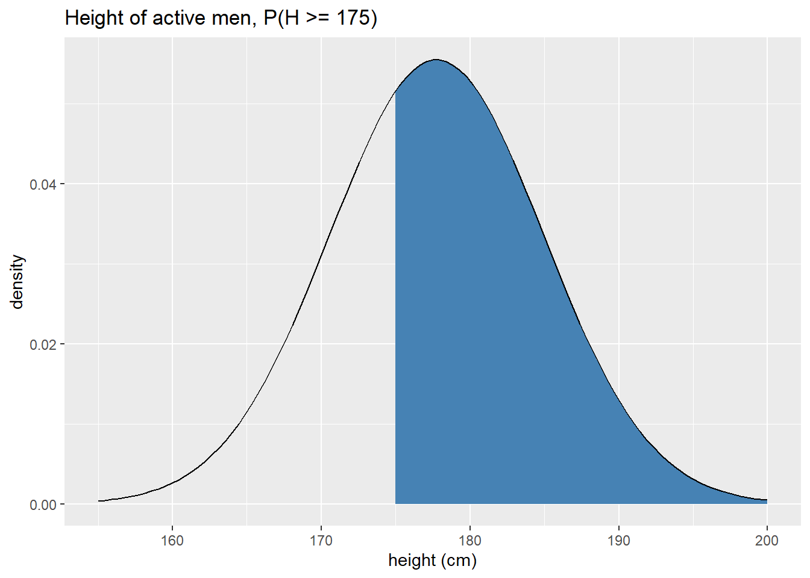
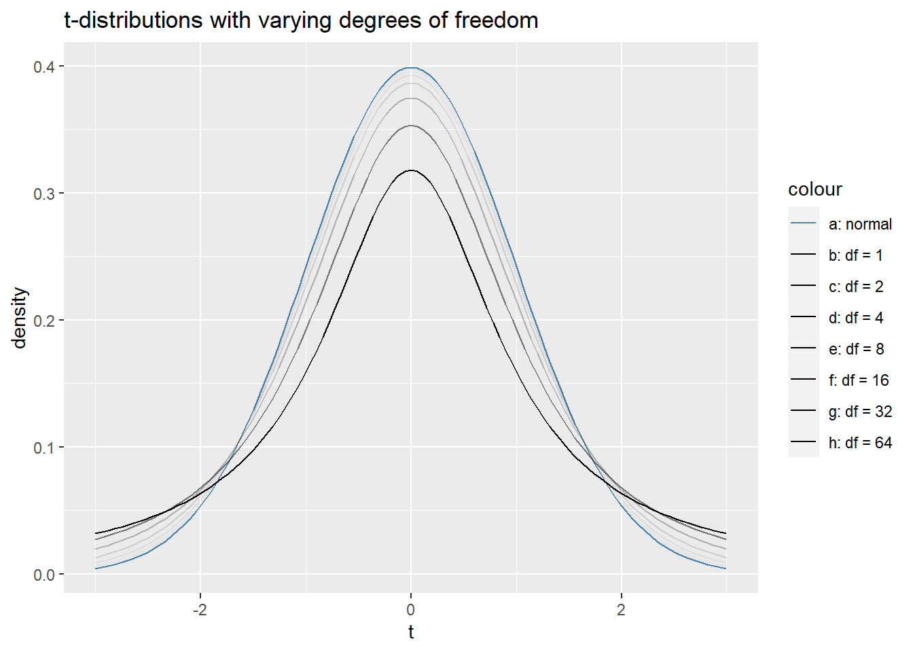
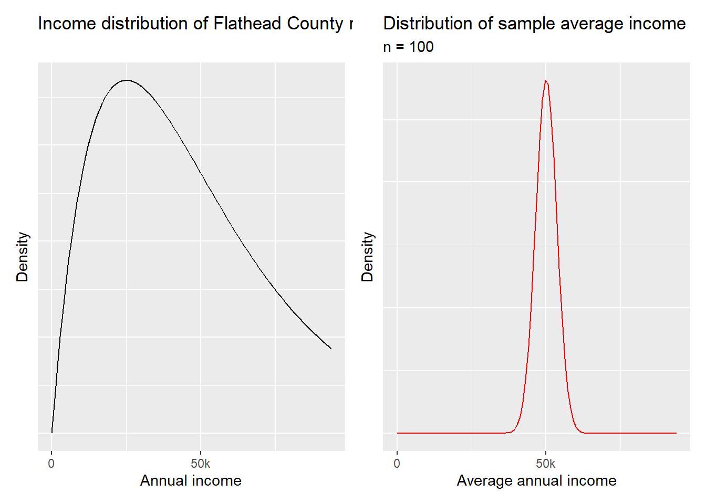

Chapter 6 Inferential statistics: Take 1
This chapter and the next are going to introduce inferential statistics in R, but from two different perspectives. This chapter will focus on doing all of the calculations involved in statistical inference “by hand” (where here we really mean using R to implement the formulas/ideas). The next chapter will show you how to perform many of the same calculations using functions native to R. It is valuable knowing how to do both so that you can check one or the other or possibly write your own type of statistical test one day!
Both chapters will be organized according to the type of variables we will be analyzing. So, for example, we’ll start with statistical inference for a single categorical variable. One can (and probably should) read the “by hand” section of this chapter in tandem with the corresponding native function section of the next chapter. This chapter will include a brief summary of the ideas involved in statistical inference, but the next will just go straight into the details.
The code chunk below attaches all packages we’ll use in this chapter and sets a seed which basically determines a starting point for some of the randomization we’ll employ in the chapter. Setting a seed insures that the same random samples will be drawn every time the code is run.
library(tidyverse)
library(knitr)
library(openintro)
library(infer)
library(patchwork)
set.seed(1187)6.1 Basics of statistical inference
We will learn about three primary types of statistical inference in this class, each aimed at answering different types of questions. To illustrate the types of questions we endeavor to answer, think about analyzing the political landscape in America. You could ask:
What proportion of Americans identify as politically independent?
Are there more politically independent people in Montana than in Idaho?
How what proportion of voters will identify as politically independent in the future?
The first question is asking for an estimate of a population parameter (the true proportion of independents in America). The second question, on the other hand, is asking about a difference between two population parameters. The third requires a prediction based on past data. These types of questions are certainly related (for instance, you could answer the second question by estimating each of the two population parameters), but the most common tools for answering them are slightly different.
Our main tool for answering the first question above is a confidence interval, which uses an estimate of the amount of variable we expect between samples to provided a range of plausible values for the population parameter. The tool we use to answer the second question is called a hypothesis test; these test assess how likely or unlikely your sample is if there were no differences. Hypothesis tests involve understanding the amount of variability we expect to see between samples. We access this this quantity by understanding the distribution of possible samples. The probability distribution associated to all possible samples is called a sampling distribution, which we discuss more in the next section.
6.1.1 Sampling distributions
Taking a simple random sample is, of course, a random process. Assigning a number like the sample proportion or sample average to this sample, then, naturally turns sample statistics into random variables. Since we can think of each sample statistic as a random variable, each sample statistic has an associated probability distribution called a sampling distribution! The overall population under consideration determines the sampling distribution and we almost never have access to population-level data, so you may wonder how or if we have any hope of understanding the sampling distribution of our statistic of interest. In particular, we hope to understand the shape, the center, and the spread of the sampling distribution. There are two primary was of doing this: through simulation and through theory. This class touches briefly on the simulation approach, but focuses mostly on the theoretical approach to accessing sampling distributions.
Before moving on to describe these approaches, we need a quick definition that helps us differentiate from talking about a population distribution and talking about a sampling distribution. The standard error, abbreviated SE, of a sampling distribution is simply its standard deviation.
One of the miracles of statistics (Note: it is not a real miracle since it is a mathematical theorem, but it amazes the author to this day.) is the Central Limit Theorem. We will state the Central Limit Theorem in a few different ways throughout this chapter, but each version essentially says the same thing. Namely, if you have a sufficiently large (caution: this means different things in different contexts) and high quality sample (IE a sample with independent observations, usually obtained through random sampling), the sampling distribution will be symmetric and unimodal with its center at the true population parameter. Moreover, as the sample size increases, the standard error decreases. In other words, all sample statistics will cluster around the true population parameter and observing a sample stat above the population parameter is just as likely as observing one below. The fact that the standard error decreases as the sample size increases codifies our intuition that “large samples are usually better,” since it implies that a sample statistic calculated from a larger sample is more likely to be close to the true population parameter than one calculated from a smaller sample.
Before moving on to discuss how we use sampling distributions, let’s try to make this a bit more concrete by simulating a sampling distribution using a technique called bootstrapping which takes a large, random sample, and resamples it many times with replacement to simulate the process of taking many different samples. We’ll use the gss2010 data set from the openintro package which records the highest educational attainment (among other things) of 2044 randomly sampled Americans in 2010.
Suppose we’re interested in knowing more about the proportion of all Americans who do not have a high school diploma. The gss2010 data set serves as our sample and we can use the sample proportion \(\hat{p}\), read as “p hat”, as a point estimate for the true population proportion \(p\).
pHat <- sum(gss2010$degree == "LT HIGH SCHOOL") / length(gss2010$degree)
pHat## [1] 0.1492172So our sample indicates that in 2010, about 15% of the American population had less than a high school diploma. But this is only a sample of 2044 Americans. If we took another sample of 2044 people and calculated the same proportion, how different do we expect that proportion to be? We can simulate this by drawing from our original sample, but doing so with replacement.
# Take sample
sample2 <- sample( gss2010$degree, size = 2044, replace = TRUE)
#Find proportion of high school dropouts
pHat2 <- sum(sample2 == "LT HIGH SCHOOL") / length(sample2)
pHat2## [1] 0.1364971This sample proportion is different, but not by too much. Of course, 2 different samples don’t provide enough evidence to make any conclusions about the amount of variability we should expect among all possible samples. To estimate the standard error, we need to simulate many more samples. We’ll use the following code, using commands from the infer package, to do this. The code below takes 5000 samples of size 2044 from our original sample again with replacement, changes the degree column in each sample to a binary outcome (no HS diploma, or other), counts the number of people in each sample without a high school diploma, then calculates the corresponding sample proportion.
simulated_sampling_distr <- gss2010 %>%
rep_sample_n(size = 2044, reps = 5000, replace = TRUE) %>%
mutate( degree = if_else(degree == "LT HIGH SCHOOL", "LT HIGH SCHOOL", "other")) %>%
count(degree) %>%
mutate(p_hat = n / sum(n)) %>%
filter( degree == "LT HIGH SCHOOL")
head(simulated_sampling_distr)## # A tibble: 6 × 4
## # Groups: replicate [6]
## replicate degree n p_hat
## <int> <chr> <int> <dbl>
## 1 1 LT HIGH SCHOOL 322 0.158
## 2 2 LT HIGH SCHOOL 315 0.154
## 3 3 LT HIGH SCHOOL 317 0.155
## 4 4 LT HIGH SCHOOL 310 0.152
## 5 5 LT HIGH SCHOOL 314 0.154
## 6 6 LT HIGH SCHOOL 311 0.152We’ve simulated a sampling distribution! Let’s look at a histogram of this simulated distribution to assess it’s shape and spread. Remember, the Central Limit Theorem says this distribution should likely by symmetric and unimodal.
ggplot(simulated_sampling_distr, aes(x = p_hat)) +
geom_histogram(bins = 15, color = "black", fill = "steelblue") +
labs(title = "Distribution of sample proportions, n = 2044",
subtitle = "Estimating SE for 2010 proportion of Americans without a HS diploma",
x = "Sample proportion, p-hat")Voila! Our sampling distribution does seem to be symmetric and unimodal. Where precisely is the center?
#average sample proportion
mean(simulated_sampling_distr$p_hat)## [1] 0.1492041What, approximately, is the standard error? Simply the standard deviation of the column p_hat!
sd(simulated_sampling_distr$p_hat)## [1] 0.007862322This means if we were to repeatedly sample 2044 Americans and record the proportion of people with less than a college degree, we should expect to see a difference of about 0.8% between the proportions on average. As will see in the next two sections, understanding the standard error is the key to performing inferential statistics. However, before we move on to using sampling distributions, let’s simulate the Central Limit Theorem’s other main claim: the standard error decreases as the sample size increases.
To show this, we’ll go the opposite direction and take smaller samples from the gss2010 data set. We should see the standard error of this simulated distribution increase. The code below simulates a sampling distribution with sample size \(n = 100\).
sampling_dist2 <- gss2010 %>%
rep_sample_n(size = 100, reps = 5000, replace = TRUE) %>%
mutate( degree = if_else(degree == "LT HIGH SCHOOL", "LT HIGH SCHOOL", "other")) %>%
count(degree) %>%
mutate(p_hat = n / sum(n)) %>%
filter( degree == "LT HIGH SCHOOL")
head(sampling_dist2)## # A tibble: 6 × 4
## # Groups: replicate [6]
## replicate degree n p_hat
## <int> <chr> <int> <dbl>
## 1 1 LT HIGH SCHOOL 8 0.08
## 2 2 LT HIGH SCHOOL 20 0.2
## 3 3 LT HIGH SCHOOL 21 0.21
## 4 4 LT HIGH SCHOOL 15 0.15
## 5 5 LT HIGH SCHOOL 15 0.15
## 6 6 LT HIGH SCHOOL 20 0.2Note that just looking at the first 6 sample proportions we can already see more variability than our first distribution. Let’s visualize this one.
ggplot(sampling_dist2, aes(x = p_hat)) +
geom_histogram(bins = 15, color = "black", fill = "steelblue") +
labs(title = "Distribution of sample proportions, n = 100",
subtitle = "Estimating SE for 2010 proportion of Americans without a HS diploma",
x = "Sample proportion, p-hat")
Notice that the center is about the same as our first sampling distribution, but our second is more spread out as we claimed above! To check these claims, let’s look at the average sample proportion and the estimated standard error.
mean(sampling_dist2$p_hat)## [1] 0.14884sd(sampling_dist2$p_hat)## [1] 0.0353421The average sample proportions are super close, but the standard error of our distribution with \(n = 100\) is about 5 times as large as the standard error of the distribution with \(n = 2044\). This fits our intuition: small samples are less reliable because they have more variability around the population parameter.
Now that we have a feel for sampling distributions, let’s use these simulated sampling distributions to make some inferences.
6.1.2 Confidence intervals
Recall that a confidence interval provides a range of plausible values for a population parameter. For example, we will use our point estimates from the previous section to estimate the true proportion of Americans without a high school diploma. The width of a confidence level depends on two quantities:
the confidence level: a measure of the likelihood that our interval contains to true population parameter. Typical confidence levels are 90%, 95%, and 99%.
the standard error: the standard deviation of the sampling distribution.
Your confidence level determines a critical value \(CV\). If your confidence level is \(CL\), then \(CL\)% of all sample proportions will fall within \(CV\) standard deviations of the true population parameter within the sampling distribution. Thus, as your confidence level increase, the critical value increases, and so your confidence interval ends up getting wider. This makes sense: to be more confident in your estimate, your range of plausible values better be “larger.”
Now we can describe the general formula for confidence intervals:
\[ \text{point estimate} \pm CV \cdot SE\]
In the sections to come, the details of your point estimates along with the procedure to calculate the standard error and critical value will change, but the general formula for a confidence interval is always the same. With this in mind, it becomes much more important to be able to correctly interpret confidence intervals. Before closing out this section, let’s use our simulated sampling distribution from the previous section to estimate the proportion of Americans without a high school diploma in 2010. In particular, we’ll calculate a 95% confidence interval.
Looking back at the histogram of simulated_sampling_distr, we see that it is approximately normally distributed. Recall that roughly 95% of all observations in a normal distribution fall within two standard deviations from the center. Thus, as a rough approximation, our critical value is \(CV = 2\).
We’ve also already found our point estimate, the sample proportion of Americans without a high school diploma pHat, and our standard error, the standard deviation of the sampling distribution.
pHat## [1] 0.1492172SE <- sd(simulated_sampling_distr$p_hat)
SE## [1] 0.007862322Using the formula, \(\text{point estimate} \pm CV \cdot SE\), our 95% confidence interval is
CI <- pHat + c(-1,1)*2*SE
CI## [1] 0.1334926 0.1649419In other words, with 95% confidence, we estimate that between 13.3% and 16.5% of all Americans in 2010 did not have a high school diploma.
6.1.3 Hypothesis tests
We use confidence intervals to estimate population parameters, but sometimes we only want to figure out if a population parameter differs from some value. This situation arises when you ask questions like “Will a majority of American Republicans vote for Donald Trump in the 2024 presidential election primary?” or “Do more than 10% of Americans fail to graduate high school?” To answer these types of questions statistically, we perform hypothesis tests. Every hypothesis test has two competing claims:
\(H_0\), the null hypothesis. This typically represents the status quo, that there is no difference, that there is no effect, or that the variables independent.
\(H_a\): the research or alternative hypothesis. This represents, well, your research question. There is a difference, or an effect, or the variables in question are dependent.
We always express the null and alternative hypothesis as statements involving population parameters. For instance, if \(p\) represents the proportion of Americans without a high school diploma in 2010, we would turn the question “Do more than 10% of Americans fail to graduate high school?” into a hypothesis test as
\(H_0 : p = .1\) (or \(p \leq .1\))
\(H_a : p > .1\)
We use sample data to evaluate hypothesis tests and do so by determining how likely or unlikely our sample data would be if the null hypothesis were true. This is called the \(p\)-value of a sample. More precisely, the \(p\)-value of a sample is the probability of observing a sample at least as a favorable for the alternative hypothesis as your own, assuming the null hypothesis is true.
Let’s think about what a \(p\)-value tells is. If you have a relatively small \(p\)-value, say .01, then there would be a 1% chance of observing the data you have (or data that’s even more extreme) if the null were true. We have two competing possibilities here: either the null hypothesis is true and we have witnessed a rare event simply by chance or the alternative hypothesis is true. Unfortunately (and this is especially if you only have a single sample) there’s no way to tell which world you’re living in! As an attempt to remedy this dilemma, we must set a significance level before performing our hypothesis test. The most common significance levels are \(\alpha = .01, .05, \text{ and } .1\). You use the significance level \(\alpha\) to evaluate the hypothesis test. In particular, if
the \(p\)-value is less than \(\alpha\), reject the null and accept the alternative. Or
the \(p\)-value is greater than or equal to \(\alpha\), you fail to reject the null.
Note that a hypothesis test is like a jury trial: a jury either finds the defendant guilty or not guilty, they never deem a defendant innocent. Similarly, we can never prove the null hypothesis; instead, we can only collect enough evidence to believe that it is false. With this in mind, we think of the significance level \(\alpha\) as the probability of a false positive in a hypothesis test. In other words, if the null were true and you could repeatedly perform the same hypothesis test, you would end up rejecting the null \(\alpha\)% of the time.
In general, there are three broad types of hypothesis tests: one-tailed upper, one-tailed lower, and two-tailed tests. The type of test determines how you calculate the \(p\)-value of your sample because it determines what counts as “more favorable for the alternative hypothesis.”
To illustrate this idea, let’s pretend we’re performing a hypothesis test for a proportion with
\[ H_0: p = .5 \]
and suppose we took a sample with size \(n = 200\) and \(\hat{p} = .55\). Below we’ll look at the three types of alternative hypotheses and visualize the corresponding \(p\)-values for our imaginary sample.
- Two-sided hypothesis test. In this case, we’re simply checking to see if the population parameter deviates from the null value. For our example: \[ H_a: p \neq .5 \]
Samples that are at least as favorable for \(H_a\) as our own come in two flavors: samples with a proportion of at least .55 and those with a proportion of at most .45. Notice that the samples with proportions of at most .45 really are just as favorable as those with proportions of at least .55 when we’re checking for a difference because they are equally as far away from the null proportion of .5. Thus, the \(p\)-value of a two-sided hypothesis tests will be a two-tailed probability. The plot below helps visualize this \(p\)-value as an area in the sampling distribution. We have hidden the plotting code here to prioritize the concepts.

- One-sided upper hypothesis test: In this case, we’re simply checking to see if the population parameter is greater than the null value. For our example:
\[ H_a: p > .5 \]
Samples that are at least as favorable for \(H_a\) as our own only one flavor this time: samples with a proportion of at least .55. Thus the \(p\)-value for this hypothesis test is an upper-tail area. The plot below helps us visualize this.
- One-sided lower hypothesis test: In this case, we’re simply checking to see if the population parameter is less than the null value. For our example:
\[ H_a: p > .5 \]
Samples that are at least as favorable for \(H_a\) as our own only one flavor: samples with a proportion of at most .55. Thus the \(p\)-value for this hypothesis test is a lower-tail area in the sampling distribution. The plot below helps us visualize this.

Our \(p\)-value is large because our sample proportion is above the null value when we thought it was going to be below. We should revise our alternative hypothesis in this case.
Let’s finish this section using the high school diploma question we started this chapter with. In particular, in 2010 did more than 10% of Americans fail to graduate high school? As a hypothesis test:
\(H_0: p = .1\)
\(H_a: p > .1\)
Let’s set our significance level to \(\alpha .05\). To evaluate the hypothesis test need to calculate a \(p\)-value. To accomplish this, we need to be able to assess the likelihood of our sample assuming the null hypothesis is true. Here we’re still using the gss2010 data for our sample; recall the recall the sample proportion is \(\hat{p} \approx 0.149\) and the sample size is \(n = 2044\).
In the next section we’ll learn some theory that describes the sampling distribution, but we will simulate a sampling distribution under the null hypothesis.
# generates results from 5000 binomial experiments w/ probability of
# success = .1 and sample size of n = 2044, returns sample proportion.
null_dist <- tibble(p_hat = rbinom(5000, 2044, .1)/2044)
# center of distribution
mean(null_dist$p_hat)## [1] 0.1000021# standard error
SE <- sd(null_dist$p_hat)
SE## [1] 0.006583714Let’s visualize the null distribution and our sample proportion \(\hat{p}\)’s location in the nul distribution.
ggplot(null_dist, aes(x = p_hat)) +
geom_histogram(bins = 15, color = "black", fill = "steelblue") +
geom_vline(xintercept = pHat, color = "red") +
labs(title = "Null distribution with p = .1 and n = 2044, pHat = .149",
x = "Sample proportion, p-hat")
As we’d expect the null sampling distribution is approximately normal. The plot above indicates that our sample proportion \(\hat{p}\) would be quite unlikely if the null hypothesis were true. To estimate exactly how unlikely, let’s estimate the \(p\)-value of our sample.
# count the number of simulated samples with proportions at least as large as
# our actual sample proportion, divide by number of samples in simulated dist.
pValue <- sum(null_dist$p_hat >= pHat ) / length(null_dist$p_hat)
pValue## [1] 0This means that if 10% of Americans didn’t have high school diplomas in 2010, the probability of finding a sample of 2044 Americans of which 14.9% or more do not have a high school diploma is essentially 0.
Because our \(p\)-value is less than the significance level \(\alpha = .05\), we reject the null hypothesis and accept the alternative. In other words, our data provide compelling evidence to believe that more than 10% of Americans in 2010 did not have a high school diploma.
We finish this section by noting that we spent a lot of time on this example and a lot of time/space on explanation here. Once you get the hang of this, you will perform and interpret hypothesis tests quickly and efficiently. Moreover, most of what we’ll do in this class will not require simulating sampling distributions. For more on this, read on!
6.2 Analyzing categorical variables
Now we will move in to using theoretical sampling distributions to calculate confidence intervals and perform hypothesis tests. The key almost all of the theoretical sampling distributions is the central limit theorem, which states that, if you have a large enough sample of independent observations, the sampling distribution will be approximately normal. Moreover, the standard error decreases as your sample size increase. In the following sections we will see a few different incarnations of the central limit theorem; the big picture will stay the same while the fine details change as we analyze different types of data.
This section focus on analyzing categorical variables. When making inferences about categorical variables it is best to analyze proportions because these generalize to populations much better than counts. In particular we want to look at the proportion of responses in a sample that take on a specific value of the categorical variable. We’ve seen this already, of course (see the last section for an example). The following subsections describe how to make inferences using a single sample proportion, two sample proportions, or (in some sense) many sample proportions.
6.2.1 Single sample proportion
When analyzing a single categorical variable, the most basic parameter to make an inference about is the population proportion \(p\), the proportion of the population taking on a particular value of the categorical variable. For example, the proportion of American adults in 2010 that do not have a high school diploma. We use sample proportions \(\hat{p}\) to make inferences about \(p\) and under the right circumstances can apply the Central Limit Theorem to understand the distribution of sample proportions.
Sample statistic: sample proportion \(\hat{p}\)
Population parameter: population proportion \(p\)
The Central Limit Theorem for a Single-sample Proportion states that if you
have a sample of \(n\) independent observations (hard to guarantee, but safe to assume if n < 10% of the populatino and you employ random sampling) and
and at least 10 (expected) success and failures (ie \(\hat{p}n \geq 10\) and \((1- \hat{p})n \geq 10\) )
Then the sampling distribution of \(\hat{p}\) is approximately normal with a mean of \(p\) and standard error \(SE = \sqrt{ \frac{p(1-p)}{n}}\). In symbols: \[ \hat{p} \sim N \left( \text{mean} = p, SE =\sqrt{ \frac{p(1-p)}{n}} \right) \]
Moreover, if \(p\) is unknown (as it usually is!), \[ SE \approx \sqrt{ \frac{\hat{p}(1-\hat{p})}{n}}\] In other words, you can approximate the standard error using the sample proportion.
In this situation, the hypotheses you need to meet in order to apply the Central Limit Theorem are typically easy to satisfy, which means we can use the CLT to make inferences in all of our favorite ways!
6.2.1.1 Confidence intervals
Suppose you have a sample of \(n\) observations that meets the conditions for applying the Central Limit Theorem. Then the distribution of sample proportions is approximately normal, centered at the true population proportion with a standard error of
\[ SE \approx \sqrt{ \frac{\hat{p}(1-\hat{p})}{n}}.\]
We can use these facts to calculate a confidence interval to estimate the population proportion. Recall that every confidence interval has the form
\[ \text{point estimate} \pm CV \cdot SE\]
where \(CV\) is the critical value determined by the confidence level. The CLT provides the standard error and our sample gives the point estimate, so we only need to worry about the critical value. Recall that if your confidence level is \(CL\), then \(CL\)% of all sample proportions will fall within \(CV\) standard deviations of the true population parameter within the sampling distribution. The sampling distribution is normal by the Central Limit theorem, so we can use the qnorm(...) function to find precise critical values.
As an example, let’s find the critical value for a 95% confidence interval. We want to find the value \(z^\ast\) so that 95% of all sample proportions fall within \(z^\ast\) standard deviations of the population proportion. In other words, we need to find \(z^\ast\) so that \(P ( |Z| \leq z^\ast ) = .95\). The graph below helps visualize the setup.

We can see that the bounds are almost \(\pm2\), but not quite. If the central area is .95, then the tail area is .05. The upper and lower tails are symmetric, so the upper tail area is .025. Thus, to find our critical value, we simply evaluate
qnorm(.025, lower.tail = FALSE)## [1] 1.959964Let’s use the same idea to find the critical values for some common confidence levels.
cvTable <- tibble( conf.level = c(.9, .95, .98, .99),
crit.val = qnorm( (1 - conf.level)/2, lower.tail =F))
cvTable## # A tibble: 4 × 2
## conf.level crit.val
## <dbl> <dbl>
## 1 0.9 1.64
## 2 0.95 1.96
## 3 0.98 2.33
## 4 0.99 2.58With that taken care of, we can calculate confidence intervals for any proportion we want at any confidence level! In particular, an \(\alpha\)% confidence level for a single proportion is
\[\hat{p} \pm z^\ast_\alpha \cdot \sqrt{\frac{\hat{p}(1-\hat{p})}{n}}. \]
Note there that this really is the same formula as above just with the details of the CLT filled in.
Let’s close this off with an example, recreating what we did in the last section to estimate the proportion of American adults without high school degrees. As a reminder, this is from the gss2010 data set from the openintro package.
The code chunk below goes through the calculation of a 95% confidence interval for the proportion in question.
# components of CI
pHat <- sum( gss2010$degree == "LT HIGH SCHOOL") / length(gss2010$degree)
SE <- sqrt(pHat*(1-pHat)/length(gss2010$degree))
zCrit <- qnorm( (1 - .95)/2, lower.tail = FALSE)
# CI
pHat + c(-1,1)*zCrit*SE## [1] 0.1337709 0.1646636So with 95% confidence, between 13.4% and 16.5% of all Americans in 2010 did not have a high school diploma. Compare this to the simulated example from the previous section: the confidence intervals are almost identical! You can think of this as the central limit theorem verifying simulations or simulations verifying the central limit theorem. In their case, it’s cool!
Next up, we’ll learn how to perform hypothesis tests using theoretical sampling distributions.
6.2.1.2 Hypothesis testing
Suppose you have a sample of \(n\) observations and you’d like to perform a hypothesis test using this sample. Recall that you assume the null hypothesis is true when performing a hypothesis test. Thus, in order to apply the Central Limit Theorem, we need to make sure our sample is sufficiently large under the null hypothesis.
More explicitly, suppose the null proportion is \(p_0\). If
your sample has \(n\) independent observations and
your sample has at least 10 expected success and failures, ie \(n p_0 \geq 10\) and \(n (1- p_0) \geq 10\)
then the distribution of sample proportions is approximately normal:
\[ \hat{p} \sim N\left( \text{mean} = p_0 , SE = \sqrt{\frac{p_0(1-p_0)}{n}} \right). \]
We can use use this sampling distribution to calculate \(p\)-values thus execute hypothesis tests. We will show how to do this first with the toy examples from the last section which demonstrate the three types of hypothesis tests then one last time using the familiar gss2010 data.
For the next three examples, suppose we have a sample of \(n = 200\) independent observations and a sample proportion of \(\hat{p} = .55\). We will perform three hypothesis tests to see if our sample provides sufficient evidence to conclude that the true population proportion is greater than .5, less than .5, or different from .5 using a siginificance level of \(\alpha = .05\).
In all cases, note that \(.5*200 = 100 \geq 10\), so the Central Limit Theorem applies. Furthermore
\[ \hat{p} \sim N\left(\text{mean} = .5, SE = \sqrt{\frac{.5\cdot .5}{200}} \right) \]
Two-sided hypothesis test: Our hypothesis test is
\[\begin{array}{cc} H_0: p = .5 \\ H_a: p \neq .5 \end{array} \]
and the image below helps us visualize the \(p\)-value of our sample with \(\hat{p} = .55\)
The upper and lower tails of the \(p\)-value are symmetric about the mean, so we can calculate one of them and double it.
pNull <- .5 SE <- sqrt(pNull*(1 - pNull)/200) pHat <- .55 pVal <- 2*pnorm(.55, mean = pNull, sd = SE, lower.tail = F) pVal## [1] 0.1572992With a \(p\)-value of approximately .16 we fail to reject the null hypothesis. The data do not provide compelling evidence of a difference.
One-Sided Upper Hypothesis test: Our hypothesis test is
\[\begin{array}{cc} H_0: p = .5 \\ H_a: p > .5 \end{array} \]
and the image below helps us visualize the \(p\)-value of our sample with \(\hat{p} = .55\)

The \(p\)-value is the shaded upper tail area and can be calculated as follows.
pNull <- .5 SE <- sqrt(pNull*(1 - pNull)/200) pHat <- .55 pVal <- pnorm(.55, mean = pNull, sd = SE, lower.tail = F) pVal## [1] 0.0786496With a \(p\)-value of approximately .08 we fail to reject the null hypothesis at a significance level of \(\alpha =.05\) . The data do not provide compelling evidence that the true proportion is greater than .5.
One-Sided Lower Hypothesis test: Our hypothesis test is
\[\begin{array}{cc} H_0: p = .5 \\ H_a: p < .5 \end{array} \]
and the image below helps us visualize the \(p\)-value of our sample with \(\hat{p} = .55\)
The \(p\)-value is the shaded llower tail area and can be calculated as follows.
pNull <- .5 SE <- sqrt(pNull*(1 - pNull)/200) pHat <- .55 pVal <- pnorm(.55, mean = pNull, sd = SE) pVal## [1] 0.9213504No suprise here. With a \(p\)-value of approximately .92 we fail to reject the null hypothesis at a significance level of \(\alpha =.05\) . The data do not provide compelling evidence that the true proportion is less than .5.
We close this section using the gss2010 data to perform a hypothesis test to see if more than 10% of Americans in 2010 did not have a high school diploma. Again we’ll use a significance level of \(\alpha = .05\). Recall the following sample size and statistic from earlier.
n <- length(gss2010$degree)
n## [1] 2044pHat <- sum(gss2010$degree == "LT HIGH SCHOOL")/n
pHat## [1] 0.1492172We reformulate our question as a hypothesis test.
\[\begin{array}{cc} H_0: p = .1 \\ H_a: p > .1 \end{array} \]
We assume the observations in the gss2010 data set are independent. Before preceding with the hypothesis test, we need to make sure our sample size is sufficiently large so that we can use the Central Limit Theorem.
pNull <- .1
# will return a logical, T/F
n*pNull >= 10 ## [1] TRUEn*(1 - pNull) >= 10## [1] TRUESince the calculation above returned two TRUE’s we’re good to go! The CLT implies.
\[ \hat{p} \sim N \left(\text{mean} = .1, SE = \sqrt{\frac{.1\cdot.9}{2044}} \right)\]
We are performing a one-sided upper hypothesis test, so our \(p\)-value is
SE <- sqrt(pNull*(1- pNull)/n)
pValue <- pnorm(pHat, mean = pNull, sd = SE, lower.tail = F)
pValue ## [1] 5.983973e-14Since \(0 < .05 = \alpha\), we reject the null and accept the research. Our data provide sufficient evidence to believe that more than 10% of Americans in 2010 did not have a high school diploma.
This \(p\)-value is the same as the one we calculated in the previous section! This is no surprise: you can either think of this example as a check on simulation techniques or as the simulation techniques as a check on the central limit theorem.
6.2.2 Two sample proportion
We often want to compare the same measurement or parameter for two different populations. As usual, we almost never know any single population parameter, so the best we can do is take a sample from each population and compare the sample statistics. When analyzing a categorical variable, we end up comparing sample proportions to make inferences about population proportions.
To make this more precise, suppose you’re investigating some proportion for two populations.
Our population parameter of interest is \(p_1 - p2\)
Our sample statistic is \(\hat{p}_1- \hat{p}_2\)
To make an inference about the population parameter, we need to learn about the sampling distribution of \(\hat{p}_1- \hat{p}_2\). Fortunately, if we can apply the central limit theorem for each sample individually, a version of the central limit theorem applies again! The formula for the standard error looks more complicated, but note that the variance of the sampling distrubtion for \(\hat{p}_1- \hat{p}_2\) is just the sum of the variances for each each of the individual sampling distributions.
CLT for two sample proportions: Suppose you are analyzing the difference between two population proportions \(p_1\) and \(p_2\), take two samples of size \(n_1\) and \(n_2\) from each population respectively. If
the observations within each sample are independent from one another,
the observations between the samples are independent, and
each sample has at least ten expected or observed success and failures (ie \(n_ip_i \geq 10\) and \(n_i(1 - p_i) \geq 10\) for \(i= 1,2\))
Then the sampling distribution for \(\hat{p}_1- \hat{p}_2\) is approximately normally distributed. In particular,
\[ \hat{p}_1- \hat{p}_2 \sim N\left( \text{mean} = p_1 - p_2 \text{ and } SE = \sqrt{\frac{p_1(1-p_1)}{n_1}+ \frac{p_2(1-p_2)}{n_2}} \right) \]
The details on how we employ the CLT for two sample proportions changes depending on whether we’d like to calculate a confidence interval or perform a hypothesis test. As above, this difference arise because always assume the null hypothesis is true when performing a hypothesis test. The following subsections highlight exactly what these differences entail, but, briefly, it only changes the standard error calculation.
6.2.2.1 Confidence intervals
As a reminder, the general formula for a confidence interval is
\[\text{point est.} \pm (\text{crit. val.})\cdot SE \]
so to calculate and interpret a confidence interval for two sample proportions, we simply need to figure out each of these three pieces. We’ll do so by example using the cancer_in_dogs data set from the openintro R package.
This data set is the result of a 1994 study from 1994 designed to determine if exposure to the herbicide herbicide 2,4-Dichlorophenoxyacetic acid (2,4-D) increases dogs’ risk of developing cancer. Let’s calculate a 95% confidence interval estimating the difference in cancer rates between dogs exposed to the herbicide and those who are not.
There are 491 dogs in the data set who were exposed and 945 dogs that were not. The data set has two columns: order and response; the first indicates whether or not the dogs were exposed to the herbicide and the second indicates whether or not the dog developed cancer. Below we display 4 randomly selected rows from the dataset.
slice_sample(cancer_in_dogs, n = 4)## # A tibble: 4 × 2
## order response
## <fct> <fct>
## 1 no 2,4-D no cancer
## 2 2,4-D cancer
## 3 2,4-D cancer
## 4 2,4-D cancerLet \(p_1\) denote the true proportion of dogs who are exposed to the herbicide and develop cancer; let \(p_2\) denote the proportion of dogs who are not exposed but still develop cancer. We need to determine our sample proportions \(\hat{p}_1\) and \(\hat{p}_2\). There are many ways to do this in R. A quick way is to use the table(...) function. Since the table only has two columns we can run the following to create a simple two-way table and store it in memory for future use.
sumTab <- table(cancer_in_dogs$response, cancer_in_dogs$order)
sumTab %>% kable()| 2,4-D | no 2,4-D | |
|---|---|---|
| cancer | 191 | 300 |
| no cancer | 304 | 641 |
The columns in this two way table correspond to the samples of interest (ie the explanatory variable) and the rows the response variable. Thus, the denominator of our sample proportions will be the column sums and the numerators will be the entries in the cancer row.
n1 <- sum(sumTab[,1])
n2 <- sum(sumTab[,2])
pHat1 <- sumTab[1,1] / n1
pHat2 <- sumTab[1,2] / n2
c(pHat1, pHat2)## [1] 0.3858586 0.3188098When we calculate a confidence interval for two sample proportions, we’re estimating the difference between the two proportions, so our point estimate is
pDiff <- pHat1 - pHat2
pDiff## [1] 0.06704881This means that roughly 6.7% more dogs exposed to the herbicide developed cancer in the sample data. Before we calculate a confidence interval, we need to make sure our samples meet the conditions needed to apply to Central Limit theorem.
Independence within samples and between samples. The study employed random sampling for both groups and each sample size is less than 10% of its corresponding population. Moreover, the samples were taken independently of one another. We’re thus good to go here.
Sample size requirements. From the two-way table
sumTababove we see that we have more than 10 successes (cancer) and failures (no cancer) in each group of dogs. Good to go here too!
The CLT applies, so the sampling distribution of \(\hat{p}_1 - \hat{p}_2\) is approximately normally distributed. Moreover, the standard error is
\[ SE \approx \sqrt{\frac{\hat{p}_1(1-\hat{p}_1)}{n_1}+ \frac{\hat{p}_2(1-\hat{p}_2)}{n_2}} \]
which we can now easily calculate!
SE <- sqrt(pHat1*(1- pHat1)/n1 + pHat2*(1- pHat2)/n2)
SE## [1] 0.02663677This means that if we repeated the study over and over we should expect about changes of about 2.7% between the various differences in sample proportions. We’re finally ready to calculate our confidence interval! Since the sampling distribution is approximately normal, our the critical value for our 95% confidence interval is
zCrit <- qnorm( (1-.95)/2, lower.tail = F)and our confidence interval is
ciDiff <- pDiff + c(-1, 1)*zCrit*SE
ciDiff## [1] 0.01484171 0.11925591How should we interpret this confidence interval? Remember, we’re estimating the difference in cancer rates between dogs who were exposed to the herbicide and those who were not. Thus:
With 95% confidence, the cancer rate of dogs who are exposed to 2,4-Dichlorophenoxyacetic acid is between 1.5% and 11.9% higher than dogs who were not exposed to the herbicide.
The next section will go through hypothesis testing using the same data.
6.2.2.2 Hypothesis testing
Out in the wild you may want to simply check for a difference between two population proportions. The statistical inference for this is, of course, a hypothesis test. When you’re investigating a question like this your null and research hypotheses are
\[ \begin{array}{cl} H_0: & p_1 - p_2 = 0 \\ H_a: & p_1 - p_2 \neq 0. \end{array} \]
The alternative hypothesis can by one-sided if you’d like; if it were \(p_1 - p_2 > 0\) you’d be asking if the first proportion is greater than the second and the opposite if it were \(p_1 - p_2 < 0\). You’d could use a one sided hypothesis test to answer a question like “are there proportionally more Republicans in Montana than in Wyoming?”
As usual the CLT is the main tool for performing a 2-sample proportion hypothesis test. In this case we need to make sure that
our observations are independent within and between groups
each sample has at least 10 expected success and failures.
There’s a small difficulty we need to deal with here. Recall that we always assume the null hypothesis is true when performing a hypothesis test. In this case that only means \(p_1 = p_2\), but it doesn’t make any claim about what these proportions are actually equal to. The remedy is to estimate this value using a pooled proportion. Suppose your first and second samples have \(n_1\) and \(n_2\) observations respectively and \(suc_1\) and \(suc_2\) successes. The pooled sample proportion is
\[ \begin{array}{ccc} \hat{p}_{pool} & = & \frac{suc_1 + suc_2}{n_1 + n_2} \\ & = & \frac{ \hat{p}_1 n_1 + \hat{p}_2 n_2}{n_1 + n_2} \end{array} \] or, in words, the pooled proportion is the total number of successes in both samples divided by the total number of observations. We use \(\hat{p}_{pool}\) to assess the sample size requirements and in the formula for the standard error if our samples meet the conditions to apply the CLT. Let’s see how this plays out using the herbicide and cancer in dogs example from the last section. A two-way table summarizing the results of the experiment is below.
sumTab %>% kable()| 2,4-D | no 2,4-D | |
|---|---|---|
| cancer | 191 | 300 |
| no cancer | 304 | 641 |
The pooled proportion is the sum of the first row of this table divided by the sum of all entries in this table.
pPool <- sum(sumTab[1,])/sum(sumTab)
pPool ## [1] 0.341922In other words, if we ignored herbicide exposure about 34% of the dogs in our sample developed cancer. We use this proportion to ensure that our samples are both large enough to apply the central limit theorem.
c( n1*pPool, n1*(1-pPool))## [1] 169.2514 325.7486c( n2*pPool, n2*(1-pPool))## [1] 321.7486 619.2514Thus both of our samples have at least 10 expected success and expected failures, so we can apply the CLT! Remember we’re assuming that the null hypothesis is true and in turn that \[p_1 = p_2 \approx \hat{p}_{pool}\]. Thus
\[ \begin{array}{ccc} SE & = & \sqrt{\frac{p_1(1-p_1)}{n_1}+ \frac{p_2(1-p_2)}{n_2}} \\ & \approx & \sqrt{\frac{\hat{p}_{pool}(1-\hat{p}_{pool})}{n_1} + \frac{\hat{p}_{pool}(1-\hat{p}_{pool})}{n_2}} \end{array} \]
The calculation for our current working example is below.
SE <- sqrt( pPool*(1-pPool)/n1 + pPool*(1-pPool)/n2)
SE## [1] 0.02633795We’re finally ready to calculate the \(p\)-value for this experiment. Let’s perform this hypothesis test with a significance level of \(\alpha = .05\).
Our point estimate of \(p_1 - p2\) is pDiff below.
pHat1 <- sumTab[1,1] / n1
pHat2 <- sumTab[1,2] / n2
pDiff <- pHat1 - pHat2
pDiff## [1] 0.06704881The test statistic, which in this case is a \(Z\)-score, of our data is
\[ \begin{array}{ccc} Z & = & \frac{\text{point est.} - \text{null value}}{SE} \\ & = & \frac{ \hat{p}_1 - \hat{p}_2}{SE} \end{array} \]
or as follows in R.
Z <- pDiff / SE
Z## [1] 2.545711Since \(Z >0\) the \(p\)-value of our hypothesis test is
pVal <- 2*pnorm(Z,lower.tail = FALSE)
pVal## [1] 0.01090555In other words, if there were no difference between cancer rates in dogs exposed to the herbicide and those who were not there would be a 1.1% chance of observing data like our own or more extreme.
Since \(p < \alpha = .05\), we reject the null and accept the research: The data provide compelling evidence to believe that there the cancer rate of dogs exposed to the herbicide is different from the rate of dogs who were not exposed.
Note that this may have been a good candidate for a one-sided hypothesis test since we’re not simply interested in detecting a difference. We may be more interested in seeing if dogs exposed to the herbicide developed cancer at greater rates than those who were not exposed. In this situation, it is common to perform a two-sided hypothesis test, but also report a confidence interval to indicate which side of the null value the true difference falls on if your tests results in a rejection of the null.
6.2.3 Chi-squared tests
We can get a lot of mileage making inferences about categorical variables using single and two sample proportion tests and confidence intervals, but they don’t do everything we need. A single proportion may not always capture the subtleties we’re interested in. For example, if you want to the test whether or not the outcomes of a die toss really are equally likely, it isn’t enough to check if a 1 occurs 1/6 of the time using a single sample proportion test because say 4’s could be less likely and 6’s more likely. Similarly, when we’re testing for an association between two categorical variables a 2-sample proportion test may miss some differences or subtleties we’re interested in. For instance, if you’re testing for an association between smoking and socio-economic status, it is possible that lower and upper class individuals smoke at the same rate, but that middle class people smoke at a different rate. We thus need to develop a tool that can capture these differences that our previous techniques miss. This is where chi-squared (or \(\chi^2\)) tests come in.
These tests are different from our the previous ones because you analyze counts instead of proportions. Counts are summarized in either one-way or two-way tables; one-way tables display the counts of the values a single categorical variable in a sample while two-way tables display the counts of the values of two categorical variables.
The data set sp500_seq from the openintro package is a summary of the all S&P500 trading day outcomes from 1950 to 2018. To get to the data set in question, first label each day as a down day or an up day, then count the number of days between two up days. The outcomes in this data set are 1, 2, 3, …, 7+ and we treat these values as an ordered categorical variables because of the 7+. Below we see a one-way table for the counts of lag times between up days. We will analyze this data set in the next section, but we will use it to test to see if the direction of the S&P500 on one day is independent from its direction on the previous day.
table(sp500_seq$race)##
## 1 2 3 4 5 6 7+
## 1532 760 338 194 74 33 17For an example of a two-way table, we’ll use the smoking data set from the openintro package. This data set presents some survey data on smoking habits in the UK. You might wonder if there’s an association between marital status and smoking in the UK. This data set could provide some insight on this question and you could attempt to answer it by analyzing the following two-way table.
table(smoking$smoke, smoking$marital_status)##
## Divorced Married Separated Single Widowed
## No 103 669 46 269 183
## Yes 58 143 22 158 40The basic idea behind all chi-squared tests is that under the null hypothesis each cell of your tabular data has an expected count; the goal is then is to measure the deviation between the observed counts and the expected counts. Moreover, we want a single test statistic that summarizes this.
You might start by simply looking at the difference between the observed \(O\) and expected \(E\) counts, then adding these differences up. Here we run into a dilemma that we’ve encountered before: positive and negative differences will possibly cancel each other out and make it look like there are no differences when in fact the differences are extreme. Instead, we square the difference between the observed and expected counts: \((O - E)^2\).
We still have a small dilemma. Suppose you have two cells with observed counts 11 and 101. The expected counts for these cells are 10 and 100 respectively; \((O- E)^2 = 1\) for both of these cells, but the first observed count is 10% different from the expected while the second is only 1% different from the expected. We thus need to measure the squared deviation from the expected counts relative to the expected counts in each cell. For each cell in our summary table, we calculate
\[ \frac{(O-E)^2}{E}\]
This value ends up being a squared \(Z\)-score! The single test statistic we calculate from our sample is the sum of these squared \(Z\)-scores and is called a \(\chi^2\)-test statistic (or chi-squared test statistic).
\[ \chi^2 = \sum_{all \, cells \\ in \, table } \frac{(O-E)^2}{E}\]
Since the test statistics are sums of squared \(Z\)-scores, the corresponding sampling distribution is a sum of squared standard normal distributions. The number of squared normal distributions is a parameter called degrees of freedom, \(df\). Thus you completely determine a chi-squared distribution with \(df\).
Once you’ve calculated your \(\chi^2\)-test statistic and have determined \(df\), you can calculate a \(p\)-value and execute your hypothesis test. For any chi-squared test, “more favorable for the alternative hypothesis” will always mean roughly more deviation from the expected counts, so \(p\)-values are always upper tail areas. For example, suppose you’re performing some hypothesis test and find
\[ \begin{array}{ccl} df & = & 5 \text{ and } \\ \chi^2 & = & 6.2. \end{array} \]
The image below shows a plot of the chi-squared distribtuion with \(df = 5\) and shades the \(p\)-value of our imaginary hypothesis test.
ggplot(tibble(x = c(0, 18)), aes(x = x)) +
geom_function(fun = dchisq,
args = list(df = 5)) +
stat_function(fun = dchisq,
args = list(df = 5),
geom = "area",
xlim = c(6.2, 18),
fill = "steelblue") +
labs( x = "chi-squared", y = "",
title = "Chi-squared distribution with df = 5",
subtitle = "p-value for chi-squared = 6.2 shaded")From this we see that we can calculate \(p\)-values for chi-squared tests using the function pchisq(test_stat, df = df, lower.tail = FALSE). For example, the \(p\)-value for our imaginary hypothesis test would be
pchisq(6.2, df = 5, lower.tail=FALSE)## [1] 0.2872417For more information about R’s functions for chi-squared distributions, see Chapter 4’s section on these distributions.
This section summarized the basics of all chi-squared tests from a big picture. From this summary note that we essentially only need to figure out two things.
How does one determine the expected counts for each cell of the table?
What are the appropriate numbers of degrees of freedom for the hypothesis test?
The answers to these questions depends on the type of chi-squared test you’re performing. The next sections provide these answers for the two types of chi-squared tests.
6.2.3.1 Chi-squared goodness of fit
These hypothesis tests are used to see if your sample data deviates from its expected distribution. For example, we expect the outcomes of a single die to be equally likely and could use a chi-squared goodness of fit test to check this.
The null and alternative hypothesis for a goodness of fit test are
\[ \begin{array}{cl} H_0 & \text{the data follow the expected distribution} H_a & \text{the data do not follow the expected distribution} \end{array} \]
and rejecting the hypothesis implies that the population distribution differs from the expected distribution.No surprise, the expected distribution determines the expected counts for each cell in your table. For example, if you toss a single die 120 times and record the outcome, you’d expect to get \(120/6 = 20\) of each number 1-6.
To perform these hypothesis tests we need to know the number of degrees of freedom. You can think of this as the minimum number of cell counts in your table you need to completely determine the remaining cells. For example, if you toss a die 120 times and know the counts of the outcomes 1 through 5, you can figure out how many 6’s you got (120 minus the sum of 1-5 counts). But if you removed any of the other counts, you wouldn’t have enough information to complete the table. Thus you have 5 degrees of freedom in the die toss example. For one-way tables and goodness of fit tests
\[ df = k -1\]
where \(k\) is the number of cells in your table.
Determining the expected counts can be slightly more involved than the die toss example. Let’s return to the S&P500 example mentioned in the previous section. We want to test to see if the direction of the stock market on one day is independent from the direction of the stock market on the previous day. If we assume that the directions are independent, then the probability of the market going up on any day is the same. This might be tough to test on its own, but notice that we can count the number of days between two consecutive up days. For instance, “up up” would give a count of one, “up down up” a count of two, etc. The table below tallies all such runs from 1990 to 2011.
spTable <- table(sp500_seq$race)
spTable##
## 1 2 3 4 5 6 7+
## 1532 760 338 194 74 33 17If the daily directions are independent, what would the table above look like? The number of days between consecutive “up” days should follow a geometric distribution! To determine a geometric distribution, we need to know the probability of a success, which is the probability that the S&P500 goes up on a given day. We can estimate this probability using the following code chunk looks at the raw S&P500 data from 1990 to 2011.
sp500_1950_2018 %>%
filter( as.character(Date) >= '1990' &
as.character(Date) <= '2012') %>%
mutate(dir = if_else( Close > Open, TRUE, FALSE)) %>%
summarize( upProb = sum(dir)/length(dir))## # A tibble: 1 × 1
## upProb
## <dbl>
## 1 0.531So the probability that the S&P500 goes up on a given day is rough 53.1%. Using this, we can generate a table of expected counts.
# total number of up-to-up runs
n <-sum(spTable)
#list of factors
days <- c(1:6, "7+")
#probability/proportion of each factor level
probs <- c( dgeom(0:5,.531), pgeom(5, .531, lower.tail = F))
# expected counts
expected <- n*probs
expected## [1] 1565.38800 734.16697 344.32431 161.48810 75.73792 35.52108 31.37361# display all of the above in a horizontally organized table
t( tibble(days, prob = round(probs, 3), expected = round(expected, 3))) %>% kable()| days | 1 | 2 | 3 | 4 | 5 | 6 | 7+ |
| prob | 0.531 | 0.249 | 0.117 | 0.055 | 0.026 | 0.012 | 0.011 |
| expected | 1565.388 | 734.167 | 344.324 | 161.488 | 75.738 | 35.521 | 31.374 |
We’re finally ready to calculate our test statistic and execute a hypothesis test. Let’s use a significance level of \(\alpha = .05\). We’re specifically testing
\[ \begin{array}{cl} H_0: & \text{the number of days between consecutive "up" days} \\ & \text{on the S&P500 follows a geometric distribution} \\ H_a: & \text{the count does not follow a geometric distribution.} \end{array} \]
Note that our table has 7 cells in it, so
\[ df = 7 - 1 = 6. \]
We will calculate our test statistic in a few steps. Recall that it is
\[ \chi^2 = \sum_{all \\cells} \frac{(O-E)^2}{E} \]
# each individual squared z-score
(spTable - expected)^2/expected ##
## 1 2 3 4 5 6 7+
## 0.71212923 0.90898305 0.11616053 6.54551974 0.03987916 0.17893220 6.58517561# test stat
chi.sq <- sum((spTable - expected)^2/expected)
chi.sq## [1] 15.08678Now that we have our test statistic in hand we can calculate a \(p\)-value.
pchisq(chi.sq, df = 6, lower.tail = FALSE)## [1] 0.0195924Since our \(p\)-value is less than .05, we reject the null and accept the alternative. In other words, the counts of runs of different lengths do not appear to follow a geometric distribution. This implies that the direction of the S&P500 on one day depends on the direction of the previous day.
This seems like it could be useful information! But how could one use it? This is a harder question and for the most part beyond the scope of this course. For fun, let’s look at the z-scores of each cell instead of the squared z-scores.
(spTable - expected)/sqrt(expected)##
## 1 2 3 4 5 6 7+
## -0.8438775 0.9534060 -0.3408233 2.5584213 -0.1996977 -0.4230038 -2.5661597The only two run lengths that seem particularly unusual are runs of length 4 and 7 or more. In particular there are more runs of length 4 than we’d expect and fewer runs of length seven or more. Does that mean you should bet on the market going up if there are three down days in a row? Not without more analysis! At a bare minimum you’d want to calculate a conditional probability: what’s the probability the market goes up after three down days?
Note: This is, of course, far from anything related to actual financial advice! This example is merely to demonstrate one of the myriad of things you can investigate with goodness of fit tests.
6.2.3.2 Chi-squared test of independence
These tests are used to check for an association between two categorical variables. Because of this you will likely see chi-squared tests of independence all over the place. For example, the results of clinical trials in medicine are often analyzed using chi-squared tests of independence since you have two groups of individuals (those in the treatment group and those in the placebo group) and there are often two or more outcomes (symptoms improve, symptoms don’t improve, etc.). Recall from above that one applies these tests to two-way tables. We’ll work through the example testing for an association between marital status and smoking in the United Kingdom (the data comes from the smoking data set from the openintro package). The observed counts from a survey are displayed below.
observed <- table(smoking$smoke, smoking$marital_status)
observed ##
## Divorced Married Separated Single Widowed
## No 103 669 46 269 183
## Yes 58 143 22 158 40The null and research hypotheses for a test of independence are
\[ \begin{array}{cl} H_0: & \text{the variables are independent} \\ H_a: & \text{the variables are dependent} \end{array} \]
For our example, the null hypothesis is that smoking and marital status are not associated; the research hypothesis is that there is an association between smoking and marital status.
As with goodness of fit tests, we need to determine the expected counts for our two-way table assuming the null hypothesis is true. Recall from probability that if two events \(A\) and \(B\) are independent, then \(P(A \& B) = P(A)P(B)\) (caution! This is only true when the events are independent). Suppose event \(A\) corresponds to row \(i\) in your two way table and event \(B\) to column \(j\). Let \(n\) denote the sum of all entries in your table; \(n\) is sometimes called the grand total. Then
\[ P(A) = \frac{\text{row i total }}{n} \quad \text{and} \quad P(B) = \frac{\text{column j total }}{n} \]
so if \(A\) and \(B\) are independent
\[ P( A \& B ) = \frac{\text{row i total }}{n} \frac{\text{column j total }}{n} = \frac{\text{row i total}\cdot \text{column j total }}{n^2} \]
Thus the expected count in the \((i,j)\)-cell of our two-way table is
\[ n \cdot P( A \& B ) = \frac{\text{row i total}\cdot \text{column j total }}{n} \]
To make this more concrete, let’s find the expected count for the \((1,1)\)-cell in our observed two-way table above. This cell corresponds to divorced people who do not smoke. The code chunk below calculates the corresponding row and column totals along with the grand total.
n <- sum(observed)
row1 <- sum(observed[1,])
column1 <- sum(observed[,1])
c(n, row1, column1)## [1] 1691 1270 161So if the smoking and marital status are independent, we’d expect to see
exp11 <- row1*column1/n
exp11 ## [1] 120.9166divorced non-smokers in our survey results. The squared \(z\)-score for this cell would then be
(observed[1,1]- exp11)^2/exp11## [1] 2.654765Now let’s make a table of expected counts. In practice, you’d use one of R’s in-built functions to perform this test, but here we’re demonstrating what’s going on “beneath the hood.” We use two nested “for” loops to make the table of expected counts.
# define an matrix with the right dimensions of all zeroes
expected <- matrix( rep(0, prod(dim(observed))),
nrow = dim(observed)[1],
ncol = dim(observed)[2])
# iterate over all rows
for(i in 1:dim(observed)[1]){
#iterage over all columns
for(j in 1:dim(observed)[2]){
#update i,j-th entry with expected count
expected[i,j] <- sum(observed[i,])*sum(observed[,j])/sum(observed)
}
}
expected## [,1] [,2] [,3] [,4] [,5]
## [1,] 120.91662 609.8403 51.07037 320.6919 167.48078
## [2,] 40.08338 202.1597 16.92963 106.3081 55.51922Is it a problem that none of the entries in the table above are integers? No! We should think of the expected counts as average outcomes.
We can now easily calculate our table of squared \(z\)-scores and our chi-squared test statistic. After that, to perform out hypothesis test, we simply need to determine the appropriate number of degrees of freedom \(df\).
(observed - expected)^2/expected##
## Divorced Married Separated Single Widowed
## No 2.6547648 5.7389881 0.5033971 8.3321480 1.4380526
## Yes 8.0084354 17.3123870 1.5185614 25.1349832 4.3380684The chi-squared test statistic is the sum of the entries in the table above.
chi <- sum((observed - expected)^2/expected)
chi## [1] 74.97979To calculate a \(p\)-value and perform this hypothesis test, we simply need to determine \(df\). As with goodness of fit tests, \(df\) is the minimum number of cell counts in your table you need to completely determine the remaining cells. If \(R\) and \(C\) are the number of rows and columns in your two-way table, then
\[ df = (R-1)\times (C-1) \]
so for our example
\[ df = (2-1)\times (5 -1 ) = 4. \]
Thus the \(p\)-value for our hypothesis test is
pchisq(chi, df = 4, lower.tail = F)## [1] 2.012302e-15This \(p\)-value is smaller than all typical significance levels, so we reject the null and accept the research. In particular, the data provide compelling evidence to believe that there is an association between marital status and smoking. What might this association look like? Let’s look at the \(z\)-scores of our table counts instead of the squared \(z\)-scores.
(observed - expected)/sqrt(expected)##
## Divorced Married Separated Single Widowed
## No -1.6293449 2.3956185 -0.7095048 -2.8865460 1.1991883
## Yes 2.8299179 -4.1608157 1.2322992 5.0134801 -2.0828030It appears that married people are way less likely to smoke and single people are way more likely to smoke than expected. As in the previous example for goodness of fit, we could do a more in-depth analysis to describe the association we detected.
6.3 Analyzing numerical variables
We’ve finished our discussion of analyzing categorical variables and now turn our attention to analyzing numerical variables. There are many different numerical variables one can analyze but we will focus on making inferences about population averages. We use the Greek letter mu \(\mu\) to denote a population average and \(\overline{x}\) to denote a sample average. Similarly, we use the Greek letter \(\sigma\) to denote the population standard deviation and \(s\) to denote sample standard deviations. We will use sample averages to make inferences about population averages, but in the process we will have to estimate \(\sigma\) using \(s\). This creates a small dilemma that we’ll define and address below.
One distinction that becomes more important and sometimes difficult to make when analyzing numerical variables is the difference between population distributions and sampling distributions. This was an easy distinction to make when we were dealing with categorical variables, because the population distributions were discrete things (proportion of success and proportion of failure), but sampling distributions were continuous. When dealing with numerical variables, however, the population and sampling distributions are often both continuous.
As an example, suppose you are trying to investigate the average income of residents in Flathead County. You take a sample of 100 adult county residents. You sample from a population and then use the sampling distribution of \(\overline{x}\) to make an inference about the county average population. The plot below helps us visualize the difference between these two distributions. The distributions below are made up and serve merely to illustrate the differences between the two distributions.

The plots above demonstrate that population distributions can be skewed (or in practice have a totally unknown shape), but under fairly mild hypotheses, the sampling distribution of \(\overline{x}\) will be symmetric and unimodal. This is the central limit theorem in action again. As with categorical variables, this will be the main driver of inference about numerical variables for us.
Central Limit Theorem (for a single sample average): Suppose we have \(n\) independent observations of a numerical variable. If either
the population we’re sampling from is approximately normal or
\(n\) is sufficiently large or
then the sampling distribution of \(\overline{x}\) is approximately normal with
\[ E(\overline{x}) = \mu \quad \text{and} \quad SE( \overline{x}) = \frac{\sigma}{\sqrt{n}}\]
No surprise, the standard error of the sampling distribution of \(\overline{x}\) depends on the standard deviation of the population. Unfortunately, we almost never know \(\sigma\) and almost never know if the population we’re sampling from is approximately normally distributed. For the latter dilemma we have a few rules of thumb to guide us.
Normality conditions:
\(n <30\) and there are no clear outliers in your data, it is common to assume your sample comes from an approximately normal population. Note that this is simply a rule of thumb! To check for outliers, use \(z\)-scores and look for the maximum in absolute value.
\(n \geq 30\) and there are no extreme outliers in your data.
If either of these conditions holds and your observations are independent, then the we assume our sample meets the criteria in order to apply the CLT as described above. There is, however, one more small obstacle: we almost never know \(\sigma\), the population standard deviation, which determines the standard error of \(\overline{x}\). We do what appears to be the most logical thing, and estimate \(\sigma\) with \(s\), our sample standard deviation so that
\[ SE = \frac{\sigma}{\sqrt{m}} \approx \frac{s}{\sqrt{n}}\]
but (because of technical reasons that we’ll skip) it turns our that \(s\) is a biased estimator of \(\sigma\). Moreover, it consistently underestimates \(sigma\). Thus, our estimate of \(SE\) above is also an underestimate, which means that we should expect more variability among our sample statistics. This bias is especially pronounced when your sample size is small, and tends to zero as the sample size increases. The key to remedying this problem, at least for our purposes, is to model the sampling distribution of \(\overline{x}\) using \(t\)-distribution.
Recall from Chapter 4 that a \(t\)-distribution is a symmetric and unimodal distribution determined by a single parameter, \(df\), or degrees of freedom. Each \(t\)-distribution has “fatter tails” than the standard normal distribution, meaning that a higher proportion of observations will fall more than 2 standard deviations from the mean. As \(df\) gets larger, \(t\)-distributions approach the standard normal distribution, so the fat tails get skinnier. Notice that this helps solve the dilemma of using \(s\) to estimate \(\sigma\)!
In the next sections we’ll see how to use \(t\)-distributions to make inferences about population averages. Everything in the following two sections should feel very similar from a big picture perspective because the overall strategy for statistical inference remains the same.
6.3.1 Single sample mean
We begin our exploration of numerical variables by learning how to make inferences about a single population average. We will see how to calculate and interpret confidence intervals, then proceed to hypothesis testing.
To illustrate the techniques, we will use two examples in what follows. One example will be based on the faithful data set that is loaded by default in R. It gives the duration of 272 eruptions at Old Faithful along with the wait time between eruptions. We will also look the women data set which gives the height and weight of 15 American women from 1975. For both examples we will need to verify that we can apply the Central Limit Theorem, so we need to to check the normality conditions listed above.
faithful: We’ll investigate the wait time between eruptions, the waiting variable in the faithful data set. Since the number of observations \(n = 272\), we simply need to check that the data set has no extreme outliers. We can do this in two ways, visually and numerically. First, we’ll look at a histogram of the data.
ggplot(faithful, aes(x = waiting)) +
geom_histogram(color = "black"
, fill = "steelblue"
, bins = 20) +
labs( title = "Wait time between Yellowstone eruptions"
, subtitle = "n = 272")
The wait time between eruptions appears to be bimodal, but this is no problem for us. From the histogram above, no observations seem particularly extreme. Let’s double check this with some calculations. We can look at a summary of the wait times:
summary(faithful$waiting)## Min. 1st Qu. Median Mean 3rd Qu. Max.
## 43.0 58.0 76.0 70.9 82.0 96.0or translate this summary into \(z\)-scores
(summary(faithful$waiting) - mean(faithful$waiting))/sd(faithful$waiting)## Min. 1st Qu. Median Mean 3rd Qu. Max.
## -2.0520 -0.9487 0.3754 0.0000 0.8167 1.8465These calculations confirm our observation: since no measurement is more than roughly 2 standard deviations away from the mean, our sample contains no outliers.
We also need to check independence of observations here. Does the wait time from one eruption to another influence the wait time until the next eruption? Quite possibly, but without more information it is hard to say. To keep things simple, we point out that independence is difficult to verify in this case, but we assume the observations are independent.
women: We’ll look at the height variable. In this case the number of observations is small as \(n = 15\). But not all is lost! If we can safely assume the population is normally distributed, we can apply the central limit theorem. As above, we first look at a histogram
ggplot(women, aes(x = height)) +
geom_histogram(color = "black"
, fill = "steelblue"
, bins = 7) +
labs( title = "Height of American women in 1975"
, subtitle = "n = 15")No surprise, the distribution of heights in this sample is fairly uniform and there are no clear outliers in the data. We’ll check this using a summary and \(z\)-scores again.
summary(women$height)## Min. 1st Qu. Median Mean 3rd Qu. Max.
## 58.0 61.5 65.0 65.0 68.5 72.0and \(z\)-scores:
(summary(women$height) - mean(women$height))/sd(women$height)## Min. 1st Qu. Median Mean 3rd Qu. Max.
## -1.5652 -0.7826 0.0000 0.0000 0.7826 1.5652Since all observations are less than 2 standard deviations from the mean, there are no outliers whatsoever in this data set. In this case it is safe to assume that the population is normally distributed, which means that we can apply the central limit theorem to this example as well!
We will use the CLT to estimate the population averages and also make inferences about them. Before we can proceed, we need to establish one more fact. Recall from above that we will model the sampling distribution of \(\overline{x}\) with a \(t\)-distribution. Unlike normal distributions that are determined by a mean \(\mu\) and a standard deviation \(\sigma\), a \(t\)-distribution is determined by a single parameter, degrees of freedom \(df\).
If your sample has \(n\) measurements, then the sampling distribution is best modeled by a \(t\)-distribution with \[ df = n - 1\]
6.3.1.1 Confidence intervals
Confidence intervals for single sample means are calculated using the typical pattern:
\[ \text{point est.} \pm \text{critical value}\cdot SE \]
where the point estimate is the sample average \(\overline{x}\) and the standard error \(SE\) is given by the CLT \(SE = \sigma / \sqrt{n} \approx s / \sqrt{n}\). If your sample meets the criteria for applying the central limit theorem, the only new datum we need to calculate is the critical value. Since the sampling distribution of \(\overline{x}\) is best modeled with a \(t\)-distribution with \(df = n-1\), we should use this distribution to find the critical value.
You can calculate these \(t\)-critical values using the R function qt in the exact same way you found \(z\)-critical values in the previous section! In particular, if calculating an \(\alpha\)% confidence interval, the critical value is \(t^\star_{df} =\) qt( (1-alpha)/2, df = n-1, lower.tail = FALSE ) where alpha is the confidence level as a decimal rather than a percentage.
Let’s now calculate and interpret 95% confidence intervals for the examples discussed in the section above, women and faithful.
faithful: We want to calculate a 95% confidence interval for the average wait time between eruptions at the Old Faithful geyser in Yellowstone (in minutes). To do so, we need four numbers: \(\overline{x}\) the sample average, \(n\) the sample size, \(s\) the sample standard deviation, and \(t^\star_df\) the \(t\)-critical value. The code chunk below calculates all of these numbers along with the standard error, then prints the \(t\)-critical value.
n <- length(faithful$waiting)
xBar <- mean(faithful$waiting)
s <- sd(faithful$waiting)
SE <- s / sqrt(n)
tStar <- qt( (1 - .95)/2, df = n-1, lower.tail = FALSE)
tStar## [1] 1.968756Notice that \(t^\star_df\) is very close to the \(z\)-critical value for a 95% confidence interval. This is because 272 is large, so the associated \(t\)-distribution is very close to the standard normal curve.
Now we can combine the above into a confidence interval.
cI <- xBar + c(-1,1)*tStar*SE
cI## [1] 69.27418 72.51994Thus, with 95% confidence, the average wait time between two eruptions at Old Faithful is between roughly 69.3 and 72.5 minutes.
women: We want to calculate a 95% confidence interval for the average height of American women in 1975. We need the same numbers as above to make this calculation and the code chunk below does exactly that.
n <- length(women$height)
xBar <- mean(women$height)
s <- sd(women$height)
SE <- s / sqrt(n)
tStar <- qt( (1 - .95)/2, df = n-1, lower.tail = FALSE)
tStar## [1] 2.144787This time around, notice that \(t^\star_df \approx 2.144\) which is larger than the \(z\)-critical value for a 95% confidence interval. This is because the \(t\)-distribution with \(14\) degrees of freedom has fatter tails than the standard normal distribution. This is exactly what we want because we are more uncertain about our use of \(s\), the sample standard deviation, as an estimate of \(\sigma\), the population standard deviation.
Now, calculating the confidence interval:
cI <- xBar + c(-1,1)*tStar*SE
cI## [1] 62.52341 67.47659Our calculations imply that the average height of American women in 1975 was between about 62.52 and 67.48 inches, with 95% confidence.
6.3.1.2 Hypothesis testing
Now that we have confidence intervals under our belt and understand the details of using \(t\)-distributions for making inferences about means, we can move through hypothesis testing fairly quickly. When making inferences about an average, the null and research hypotheses are statements about the value of the true population mean.
\[ \begin{array}{cc} H_0: & \mu = \mu_0 \\ H_a: & \mu \neq \mu_0 \text{ or } \mu > \mu_0 \text{ or } \mu < \mu_0 \end{array} \]
Remember that one assumes the null hypothesis is true when performing a hypothesis test. Note: unlike analyzing proportions, the standard error depends only on your sample and not the null mean! This is because \[ SE = \frac{\sigma}{\sqrt{n}} \approx \frac{s}{\sqrt{n}} \] whenever we can apply the Central Limit Theorem.
To execute this hypothesis test, we perform the usual steps.
Set a significance level \(\alpha\)
Calculate all appropriate sample statistics. In this case the sample average \(\overline{x}\) and standard deviation \(s\).
Calculate the standard error \(SE\).
Calculate your test statistic. In this case, it is called a \(T\)-statistic since the sampling distribution is best modeled with a \(t\)-distribution with \(df = n-1\). These statistics are the same as \(z\)-scores.
\[ T = \frac{\overline{x} - \mu_0}{SE} \]
Note that this is where we’re using the null hypothesis! The \(T\)-statistic measures how far our sample average is from the null average in terms of standard error.
Calculate the \(p\)-value of your test statistic. This depends on the type of test you’re performing. In this case, \(p\)-value calculations are exactly like they are for single sample proportions, except you use the function
ptin R instead ofpnorm.Compare your \(p\)-value to the significance level \(\alpha\) and make a conclusion.
We’ll use the two data sets above to go through two different hypothesis test examples.
women: As usual, we start with a question: “Were American women taller in 1975 than they were in 2022?” This question is actually a bit more complicated than it seems at first pass since the category “adult” spans a wide range of ages and average height varies with time. Our data set women looks at the average height of women aged between 30 and 39 in 1975, so really we should ask “Were American women aged 30-39 taller in 1975 than they were in 2022?”. We’ll use a significance level of \(\alpha = .1\).
Pulling data from Our World in Data, the average height of an woman aged between 30 and 39 in 2022 was roughly 64.4 inches. If \(\mu\) denotes the average height of women in 1975, then we set up our hypothesis test as
\[\begin{array}{cc} H_0: & \mu = 64.4 \\ H_1 & \mu > 64.4 \end{array}\]
The our sample mean, standard deviation, sample size, and standard error are calculated below.
n <- length(women$height)
xBar <- mean(women$height)
s <- sd(women$height)
SE <- s / sqrt(n)
#printing the calculated values
c(n = n, xBar = xBar, s = s, SE = SE)## n xBar s SE
## 15.000000 65.000000 4.472136 1.154701We now use these values to calculate the \(T\) statistic. Note: we label this test statistic t because T is R shorthand for TRUE.
t <- (xBar - 64.4)/SE
t## [1] 0.5196152so our sample lies about half a standard deviation above the null average. We calculate the \(p\)-value for this test using the function pt with \(df = n -1 = 15 -1 = 14\). Recall that we are performing a one-sided upper hypothesis test.
pVal <- pt(t, df = 15 - 1, lower.tail = F)
pVal## [1] 0.3057246This means that if women aged between 30-39 were the same height in 1975 as they were in 2022 there would be about a 30% chance of observing a sample with an average height of 65 inches or more.
Of course, since \(p \approx .306 \geq .1\) we fail to reject the null hypothesis.
faithful: Now imagine you’re a program director at Yellowstone National Park and in charge of the Old Faithful eruption presentations. You currently have presentations every 75 minutes, but for some reason, your scheduling seems off. You decide to to check to see if the average wait time between eruptions is different from 75 minutes using the data we have available in faithful and we will perform out hypothesis test using a significance level of \(\alpha = .01\). Re-framing your question as a hypothesis test yields
\[\begin{array}{cc} H_0: & \mu = 75 \\ H_1 & \mu \neq 75 \end{array}\]
We derive the necessary numbers for this hypothesis test in the code chunk below.
n <- length(faithful$waiting)
xBar <- mean(faithful$waiting)
s <- sd(faithful$waiting)
SE <- s / sqrt(n)
#printing the calculated values
c(n = n, xBar = xBar, s = s, SE = SE)## n xBar s SE
## 272.0000000 70.8970588 13.5949738 0.8243164We use these values to calculate the \(T\)-test statistic.
t <- (xBar - 75)/SE
t## [1] -4.977387This shows our sample average is almost 5 standard deviations below the mean in the null sampling distribution. With this in mind, we expect to reject the null and accept the alternative hypothesis, but we’ll calculate the \(p\)-value for our sample just to be sure.
Since we’re performing a two-sided hypothesis test and \(T < 0\), the \(p\)-value is
pVal <- 2*pt(t, df = n-1)In other words, if the average wait time between eruptions were actually 75 minutes, there’s about a 0.00011% a sample of 272 eruptions with an average wait time as different from 75 minutes as our own. Since \(p < \alpha\), we reject the null and accept the research: the data lead us to conclude that the average wait time between eruptions at Old Faithful is different from 75 minutes.
Now, it’s up to you as the imaginary program manager to figure out how to use this information.
6.3.2 Two sample mean
Just as in the previous section concerning numerical variables, we can soup up our work with a single sample mean so that we can use essentially the same two to compare two population averages using two independent samples. You will typically find yourself in this situation when you are testing for an association between a 2-valued categorical explanatory variable and a numerical response variable. One possible example is in studying the outcome of a randomized control trial concerning a particular drug’s affect on, say, reaction time. Give one group the drug, the other group a placebo, then measure the time it takes everyone to complete a particular reaction time oriented task. In this case, you’d want to compare the average reaction time of the treatment group (sample 1) to the average reaction time of the control group (sample 2). In this case, the explanatory variable is group membership (ie received the drug or did not) and the response variable is reaction time. An association between the variables in this case simply manifests itself as a difference between the group averages. In what follows we’ll learn how to analyze data that comes about from such a study.
The population parameter of interest is the difference in population means
\[ \mu_1 - \mu_2 \]
so the appropriate point estimate, no surprise, is the difference in sample averages
\[ \overline{x}_1 - \overline{x}_2 \]
Our hope is to use the tool we derived in the last section, but tweak the parameters a bit so that it can be applied to two samples instead of just one. As a first step, we hope to be able to apply the Central Limit Theorem, so, of course, both of our samples need to meet certain criteria. These are:
Independent observations within groups. Observations in one group should not influence the measurement of any other observation in the same group.
Independence between groups. Observations in one group should not influence the measurement of any other observation in the other group.
The sampling distribution for each group should be approximately normal on its own. Check this using the sample size and/or normality check from the previous section.
If your samples meet these criteria, the sampling distribution of \(\overline{x}_1 - \overline{x}_2\) is approximately normal with
\(E(\overline{x}_1 - \overline{x}_2 ) = \mu_1 - \mu_2\) and
\(SE\left(\overline{x}_1 - \overline{x}_2 \right) = \sqrt{ \frac{\sigma_1^2}{n_1} + \frac{\sigma_2^2}{n_2} } \approx \sqrt{ \frac{s_1^2}{n_1} + \frac{s_2^2}{n_2} }\)
where \(s_i^2\) and \(\sigma_i^2\) are the sample and population standard deviations of group \(i\) and \(n_i\) is the sample size.
As in the single sample case, whenever we do not know the population standard deviation (ie almost always!) we must approximate the sampling distribution with a \(t\)-distribution. This means we need to determine an appropriate number of degrees of freedom. We’ll skip thinking about why the following is true, but some smart people (Welch and Satterthwaite) have determined that
\[ df \approx \frac{\left( \frac{s_1^2}{n_1} + \frac{s_2^2}{n_2} \right)^2}{\frac{s_1^4}{n_1^2(n_1 - 1)} + \frac{s_2^4}{n_2^2(n_2 - 1)}} \]
which is a terrible formula to try to use. It turns out that
\[ \min( n_1 -1, n_2 - 1 ) \leq \frac{\left( \frac{s_1^2}{n_1} + \frac{s_2^2}{n_2} \right)^2}{\frac{s_1^4}{n_1^2(n_1 - 1)} + \frac{s_2^4}{n_2^2(n_2 - 1)}} \]
and using fewer degrees of freedom results in more conservative decision making. Thus, especially when making calculations “by hand,” it is common to set \(df\) equal to the smaller of \(n_1 -1\) and \(n_2 -1\), ie
\[ df \approx min(n_1 - 1, n_2 - 1).\]
A note about equal variance two-sample tests: If you look around the internet or search other resources, you may stumble across a more simple formula for the degrees of freedom and/or standard error. In particular, you may see \(df = n_1 + n_2 - 2\). This degree of freedom calculation and the associated standard error calculation are only valid if you {know} the variances of both populations are equal. This is a “dangerous” assumption to make in that it is often hard or impossible to know this fact. We recommend instead to default the one of the two degree of freedom calculations along with the standard error formula described above as these will hold all of the time, even when the population variances are equal.
With these details ironed out, we’re ready to move on to some examples of inference. For our examples, we’ll use the gss2010 data set from the openintro package which gives some data from the 2010 General Society Survey. We want to use this data set to explore the relationship between the respondents’ hours worked per week and their opinion about whether or not marijuana should be legalized. These variables are represented in the hrs1 and grass column. The grass column has the values
unique(gss2010$grass)## [1] <NA> LEGAL NOT LEGAL
## Levels: LEGAL NOT LEGALand the hrs1 variable records the hours per week a respondent works. Some values are missing from both columns, so the code below subsets the data for respondents who answered both questions, then selects only the columns we’re interested in.
mj <- gss2010 %>%
filter(!is.na(hrs1) & !is.na(grass)) %>% #select only rows with non-null values in hrs1 and grass
select(grass, hrs1)Before moving on to making inference, let’s look at a summary of data.
mj %>%
group_by(grass) %>%
summarise(
n = n() #sample size for each stance on mj legalization
, xBar = mean(hrs1) #sample average for stance
, s = sd(hrs1) #sample standard deviation for each stance
)## # A tibble: 2 × 4
## grass n xBar s
## <fct> <int> <dbl> <dbl>
## 1 LEGAL 357 41.5 14.5
## 2 NOT LEGAL 354 40.0 15.56.3.2.1 Hypothesis testing
We’ll begin with a question: Is stance on marijuana legalization associated with weekly hours worked? In other words, is there a difference between the average number of hours worked by people who believe marijuana should be legalized and those who don’t? Let \(\mu_L\) and \(\mu_N\) denote the average number of hours worked weekly by those who believe marijuana should be legalized and those who think it should be illegal. Then our question, as a hypothesis test, is
\(H_0: \mu_L - \mu_N = 0\)
\(H_a: \mu_L - \mu_N \neq 0\)
Let’s perform this hypothesis test with a significance level of \(\alpha = .05\). First, we should think about the conditions needed to ensure an approximately normal sampling distribution:
Independence between and within groups: this seems safe to assume because the General Society Survey, the source of this data, is a high quality randomized survey.
Normality of each individual sampling distribution: the sample sizes are both farily large (\(n_i \geq 350\)), so the CLT would apply to each group individually.
Now we need to calculate a bunch of sample statistics. In particular, the sample size, sample mean, and sample standard deviation for each group. The code below first breaks our data set into two smaller sets, one for each group.
legal <- mj %>%
filter(grass == 'LEGAL')
illegal <- mj %>%
filter(grass == 'NOT LEGAL')Now we calculate all of the sample statistics (note that these are all in the summary table above…).
#legal
xBarL <- mean(legal$hrs1)
sL <- sd(legal$hrs1)
nL <- length(legal$hrs1)
#illegal
xBarN <- mean(illegal$hrs1)
sN <- sd(illegal$hrs1)
nN <- length(illegal$hrs1)
#standard error
SE <- sqrt( sL^2/nL + sN^2/nN)We’re angling to calculate a \(p\)-value, so need to determine our \(t\)-test statistic and the number of degrees of freedom. The test statistic is easier, so we’ll do that first. As usual it is the point estimate minus the null value all divided by the standard error.
#note that the null difference is 0
t <- (xBarL - xBarN)/SE
t## [1] 1.352633As a demonstration of the claims about degrees of freedom mentioned above, we will calculate this quantity both ways. The long way gives
df1 <- (sL^2/nL + sN^2/nN)^2/ ( sL^4/(nL^2*(nL-1)) + sN^4/(nN^2*(nN-1)))
df1## [1] 705.1106which isn’t a whole number. This isn’t a problem even though it’s a pain to calculate ‘by hand.’
The easier approximation is
df2 <- min(nL-1, nN-1)
df2## [1] 353which is quite a bit smaller than the “official” number of degrees of freedom, yielding slightly more conservative decisions in hypothesis testing and wider confidence intervals. Now that we have our test statistic and degrees of freedom, we can calculate our \(p\)-value. Our test statistic \(t\) is positive, so we can calculate our \(p\)-value as
#using df1, the 'official' degrees of freedom
2*pt(t, df = df1, lower.tail = FALSE)## [1] 0.1766066#using df2, the 'approximate' degrees of freedom
2*pt(t, df = df2, lower.tail = FALSE)## [1] 0.1770387Notice that the 2 \(p\)-value calculations are not all that different, but that the second value is ever so slightly greater than the first. This is reflecting the more conservative degree of freedom choice.
To finish up, our \(p\)-value is greater than the significance level \(\alpha = .05\), so we fail to reject the null. In other words, our data do not provide compelling evidence of a difference in average weekly hours worked based on marijuana legalization stance.
In the next section we’ll use the calculations from this section to calculate and interpret confidence intervals for a difference in two averages.
6.3.2.2 Confidence intervals
When you calculate a confidence interval for a difference between two means it is important to remember that that is exactly what your interval is estimating. In others words, you’re estimating \(\mu_1 - \mu-2\). The procedure and basic ingredients needed for calculating these confidence intervals is essentially the same as always:
\[ \text{point est.} \pm \text{crit. val.}\cdot SE \]
where in this case
\(\text{point est.} = \overline{x}_1 - \overline{x}_2\);
\(\text{crit. val.} = t^\star_df\), the \(t\)-critical value that corresponds to your confidence level and the appropriate number of degrees of freedom, approximately \(df = \min \left( n_1 -1, n_2 - 2) \right)\); and
\(SE \approx \sqrt{ \frac{s_1^2}{n_1} + \frac{s_2^2}{n_2} }\)
Continuing the example from the previous section, let’s estimate the difference in average weekly hours worked by people who believe marijuana should be legalized and those who don’t at the 90% confidence level. In the previous section we calculated our point estimate, the standard error, and the number of degrees of freedom needed for this calculation. They are
c(point.est = xBarL - xBarN, SE = SE, df = df2)## point.est SE df
## 1.523643 1.126428 353.000000so the only ingredient we need to calculate is the \(t\)-critical value \(t_{df = 353}^\star\). We’re using a 90% confidence interval, so this value is
t.crit <- qt( (1-.9)/2, df = df2, lower.tail = FALSE)
t.crit## [1] 1.649182Our 90% confidence interval is
(xBarL - xBarN) + c(-1,1)*t.crit*SE## [1] -0.3340409 3.3813276Interpreting this confidence interval is maybe the newest thing in this section. Since we’re estimating \(\mu_{legal} - \mu_{not\,legal}\), the negative end point gives an estimate where \(\mu_{not\, legal} > \mu_{legal}\) and while the positive endpoint gives an estimate where \(\mu_{legal} > \mu_{not\, legal}\).
Thus, with 90% confidence, we estimate that people who believe that marijuana should be legal work, on average, between .33 hours less and 3.38 hours more than people who think the drug should be illegal.
Note that this confidence interval calculation jives with our hypothesis test in the previous section since 0 is in the interval. This means the null value from the hypothesis test is a plausible value for the true difference in means, so we better have failed to reject the null (which we did!).
6.3.3 Paired data
Think back to making inferences about two-sample proportions. When performing our analysis, we had either verify or assume that the observations in our samples were independent from one another, both within and between groups. It turns out that some studies and experiments produce numerical data that do not satisfy this condition, but the way they fail to meet the independence condition is a feature instead of a bug from an analysis perspective. Some examples of data where we witness this type of failure show up when
Comparing textbook prices from the FVCC Bookstore and Amazon.
Comparing the volume of bikes tire on two different rims.
Comparing individuals’ pre-course test score with their post-course test score.
Notice that in each of these cases, we’re taking two measurements for the same observational unit. For example, the book OpenIntro Statistics costs $20 from Amazon but the same book costs $30 from the FVCC book store. The observational unit in this case is the textbook and there are two different price measurements for it. Because it is the same book, the Amazon and FVCC bookstore prices are dependent!
The examples above all generate what we call paired data where you have two collections of measurements, but each observation in one collection has a “special correspondence/correlation” with an observation in the other collection. Think for a second about the types of questions that one might try to answer with paired data. Mimicking the examples of paired data above, we might ask the following:
Does the FVCC Bookstore charge more than Amazon, on average?
Does rim width affect bike tire volume?
Does a course improve students’ knowledge and skillet in a particular subject?
Each of these questions can be answered by looking at the average difference in the paired data sets. We use \(\mu_{diff}\) to denote the average difference in a paired data set. If you take the difference between the paired measurements, you have a single measurement for each observational unit. This implies that one can analyze \(\mu_{diff}\) just like one would analyze a single-sample numerical variable! In particular, the central limit theorem, as stated in the previous section applies in the exact same way, you just calculate and use the sample average and standard deviation of the differences.
In the subsections below we will go through an example of calculating and interpreting a confidence interval and a hypothesis test for some paired data. While it would be nice to actually analyze textbook price differences for FVCC as it compares to Amazon, gathering that information is somewhat tedious. Fortunately, the openintro package has textbook data from UCLA from Fall 2018. This is stored in the data set ucla_textbooks_f18. Below we select the course name along with the course’s new textbook price from the UCLA bookstore and Amazon.
books <- ucla_textbooks_f18 %>%
select(course, bookstore_new, amazon_new) %>%
drop_na() #this omits all rows with an NA or unknown price
head(books)## # A tibble: 6 × 3
## course bookstore_new amazon_new
## <fct> <dbl> <dbl>
## 1 Introduction to American Indian Studies 48.0 47.4
## 2 Archaeology: Introduction 14.3 13.6
## 3 Arts Encounters: Exploring Arts Literacy in 21st Century 13.5 12.5
## 4 Introduction to Buddhism 49.3 55.0
## 5 Black Holes and Cosmic Catastrophes 120. 125.
## 6 Introduction to Communication Studies 17.0 11.8We want to investigate the average difference in cost between Amazon and UCLA’s bookstore. Let’s add a difference column to the books data set. Note that we will look at the bookstore’s cost minus Amazon’s cost for each book.
books <- books %>%
mutate(diff = bookstore_new - amazon_new)
head(books)## # A tibble: 6 × 4
## course bookstore_new amazon_new diff
## <fct> <dbl> <dbl> <dbl>
## 1 Introduction to American Indian Studies 48.0 47.4 0.520
## 2 Archaeology: Introduction 14.3 13.6 0.710
## 3 Arts Encounters: Exploring Arts Literacy in 21st Cen… 13.5 12.5 0.97
## 4 Introduction to Buddhism 49.3 55.0 -5.69
## 5 Black Holes and Cosmic Catastrophes 120. 125. -4.83
## 6 Introduction to Communication Studies 17.0 11.8 5.18Let’s compare the average difference in price to the difference between average prices (recall this is what we looked at in the previous section).
mean(books$diff)## [1] 3.583235mean(books$bookstore_new) - mean(books$amazon_new)## [1] 3.583235They are the same! So what’s different here from the last section? Well, in the previous section we had two independent samples, but now, while we are looking at two columns of data, we essentially only have a single sample of independent measurements. This changes two things, one small and one large:
The relatively small change is the number of degrees of freedom. If we were performing a two-sample \(t\)-test with the data in
bookswe’d use $ df = 133.59$, but with a single sample of differences we use \(df = n-1 = 67\).The larger change is the standard error used in inference. Recall that two-sample \(t\)-test uses \[ SE = \sqrt{ \frac{ \sigma_1^2}{n_1} + \frac{ \sigma_2^2}{n_2} } \approx \sqrt{ \frac{ \sigma_1^2}{n_1} + \frac{ \sigma_2^2}{n_2} } \] precisely because we have two independent samples. When we only have a single independent sample of differences, we use \[ SE = \sigma_{diff}/\sqrt{n} \] just as you would for a single sample mean analysis. Let’s compare these values for our working example.
# If the book samples were independent, the SE would be
sqrt( var(books$bookstore_new)/length(books$bookstore_new)
+ var(books$amazon_new)/length(books$amazon_new))## [1] 9.518939# But in reality the standard error should be
sd(books$diff)/sqrt(length(books$diff))## [1] 1.627834When you have two independent samples you expect more variability between samples! This should be somewhat intuitive: since the two samples have no sway on one another, they can be a lot more different.
Next up we’ll see how to use these details to perform inference, starting with confidence intervals, then performing a hypothesis test.
6.3.3.1 Confidence intervals
As always, the formula for a \(c\)% confidence interval starts with \[ \text{point est.} \pm \text{crit val.}\cdot SE\] Filling in the details, we have
Point estimate: the average difference, \(\overline{x}_{diff}\).
$ SE = {diff} / s{diff} / $
critical value: the \(t\)-critical value with \(df = n -1\).
Let’s use this to calculate a 95% confidence interval for the average difference between bookstore and Amazon textbook prices for UCLA in 2018.
#first we calculate all the necessary pieces
xBar <- mean(books$diff)
s <- sd(books$diff)
n <- length(books$diff)
SE <- s /sqrt(n)
crit.val <- qt( (1-.95)/2, df = n -1, lower.tail = FALSE)
#then calculate the confidence interval
xBar + c(-1,1)*crit.val*SE## [1] 0.3340641 6.8324064What does this mean? Remember, we’re estimating the average difference in book cost between the UCLA bookstore and Amazon. Thus, with 95% confidence, new textbooks from the UCLA book store cost, on average between $0.33 and $6.83 more than the same new textbook on Amazon.
6.3.3.2 Hypothesis testing
Just as with calculating and interpreting confidence intervals, the key to performing hypothesis tests on paired data is to remember that pairing yields a single sample of differences, so the details of inference are essentially the same as they are for a single sample mean.
Returning to our books example, let’s try to answer the following question: “Do new textbooks from the UCLA bookstore cost more, on average, than new textbooks from Amazon?” Turning this question into a hypothesis test.
\(H_0: \mu_{diff} = 0\)
\(H_a: \mu_{diff} > 0\)
Here note that \(\mu_{diff}\) corresponds to bookstore price minus Amazon price. Let’s perform this hypothesis test with a significance level of \(\alpha = .1\). The sample statistics we need are calculated below.
xBar <- mean(books$diff)
s <- sd(books$diff)
n <- length(books$diff)
SE <- s /sqrt(n)
c(xBar, s, n, SE)## [1] 3.583235 13.423467 68.000000 1.627834The test statistic is a \(t\)-statistic and is
\[ t = \frac{\overline{x}_{diff} - \mu_{diff, null}}{SE} \]
where \(\mu_{diff,null}\) is the null value of the mean difference; this value is typically zero. Thus our test statistic is
t <- xBar/SE
t## [1] 2.201228which means that if there were no difference in price, our sample falls about 2.2 standard deviations above the null value in the sampling distribution.
We use our \(t\)-statistic to calculate the \(p\)-value for this test. Since we are performing a one sided, upper hypothesis test the \(p\)-value is
pt(t, df = n -1, lower.tail = FALSE)## [1] 0.01558447Thus, if there were no difference in textbook costs, there would be about a 1.6% chance of observing a sample with differences at least as extreme as those observed in our sample.
The \(p\)-value \(.0156 < \alpha = .05\), so we reject the null and accept the research. In a sentence: the data provide compelling evidence to believe that, on average, new textbooks cost more from the UCLA bookstore than from Amazon.
6.3.4 Analysis of variance (ANOVA)
From a calculation standpoint, the analysis of variance tests, or ANOVA tests may feel like the most technical type of hypothesis test we learn about this semester. With that in mind, I encourage you to rely on technology (ie R) maybe even more for this type of test than all of the rest. In this section, we will go through the nitty gritty details of ANOVA, *but I suggest you use the aov function described in a future section for all of your own calculations. This function does all the work for you, which helps minimize error on your part.
With that disclaimer out of the way, what is the purpose of ANOVA? In the most direct sense, it is an extension of a two sample mean comparison. Recall that you can think of a two-sample mean comparison as a check for an association between a categorical explanatory variable with two values and a numerical response variable. For instance, think back to our example where we checked to see if belief about marijuana legalization had any association with average weekly hours worked (it appears not to). In this case, stance on legalization was the categorical explanatory variable and weekly hours worked was the numerical response variable.
Well, what would you do if your categorical explanatory variable had more than two possible values? Let’s set up a simulated example that we’ll use to demonstrate the ideas at play here. Suppose we run an experiment testing the efficacy of some new drug and we suspect the effect of the drug might be dose dependent. We randomly sample 45 people to participate in the trial and assign them to one of three groups:
A: control group receiving only a placebo;
B: treatment group receiving 1mg of the drug;
C: treatment group receiving 2mg of the drug.
Measure some health index \(H\) for each participant after 2 weeks.The code below simulates data for two different trials of the same experiment. Group A0 is the group A from the first trial while group A1 is the A group from the second trial.
There is a very clear difference between the two trials; you can see that there’s much more “spread” in trial 0 than in trial 1 which seems to make the differences between the group averages more apparent in the second trial. More on this soon.
Let’s return to the original question: how could we analyze the results of only one of these trials? One thought is to try to make an inference about difference between the group averages two at a time. The idea behind this is that if there is no association between the group and outcome, then the group averages would all be the same. Thus, an association would rear its head as a difference between group averages.
To test two groups at a time for trial 0 you’d have to test A0 vs B0, A0 vs C0, and B0 vs C0. This might not seem like too much of an issue, but a major problem rears its head when you perform many test: the probability of making at least one Type I error (ie a false positive) grows exponentially. Suppose you have \(k\) groups or \(k\) values of a categorical variable. To test for a difference in a numerical variable for two values at a time, you would have to perform
\[ m = {k \choose 2} \]
distinct hypotheses tests. Remember that the significance level \(\alpha\) of a hypothesis test is the probability of a false positive if the null is true. Thus, if all group averages are the same, the probability of making at least one Type I error out of all \(m\) 2-sample \(t\)-tests is
\[ 1 - (1 - \alpha)^m\]
The table below gives this probability for a few different group numbers \(k\) and \(\alpha = .05\)
tibble(
k = 1:5*5
, probOneTypeOne = round(1 - .95^choose(k, 2), 4)
)## # A tibble: 5 × 2
## k probOneTypeOne
## <dbl> <dbl>
## 1 5 0.401
## 2 10 0.901
## 3 15 0.995
## 4 20 1.00
## 5 25 1If you have 15 groups or 15 values for your categorical variable, at least one Type I error is virtually certain. This might seem outlandish at first glance - what categorical variables have more than 15 meaningful groups? It turns out that this becomes a major problem in genetics, as one example, where one can “measure expression levels of tens of thousands of genes”.
For our purposes we can get around this dilemma by understanding a single hypothesis test, the Analysis of Variance or ANOVA test that checks for an association between the categorical explanatory variable and the numerical response variable. Suppose we have \(k\) different groups that we’d like to compare the average of for some numerical variable. Let \(\mu_i\) denote the population mean of group \(i\). The null and alternative hypotheses for ANOVA are:
\(H_0: \mu_1 = \mu_2 = \cdots = \mu_k\). (the variables are independent)
\(H_a: \text{at least one mean differs from the others}\) (there is an association between the variables)
Before digging in to the details of this test, we should understand the conditions required for making a valid inference. We need
observations that are independent between and within groups;
the observations within each group to come from a normally distributed population; and
the variances of the groups are all approximately equal
If you look back up to the code generating our simulated example, you’ll notice that these conditions are satisfied by our data:
we randomly generated independent observations with
rnormto ensure independence and that we were sampling from normally distributed populations.we chose the standard deviations of the normal distrubtions to be about the same in each trial to make sure we met the last condition.
With these conditions satisfied, we’re ready to proceed in understanding ANOVA. We use the plot above as motivation. Again, notice that in trial zero, there is not very much of a difference between the centers of each group relative to the amount of variability within each group. On the other hand, in trial one, the difference between the group’s centers are large relative to the amount of variability within each group. The boxplots below help to emphasize this point.
ggplot(df, aes(x = Group, y = Outcome, color = Trial)) +
geom_point() +
geom_boxplot(alpha = .5)This plot indicates that we should try to develop a single sample statistic that looks at the variability of the group averages relative to the variability within all groups. This will be the \(F\)-statistics:
\[ F = \frac{\text{mean variability between groups}}{\text{mean variability within groups}}\]
We just need to figure out how to best measure the numerator and the denominator. We will make calculations for both trial 0 and trial 1 simultaneously, so subset df for each trial first.
df0 <- df %>%
filter(Trial == 0 )
df1 <- df %>%
filter(Trial == 1)Numerator of F-statistic: When measuring any type of variance, you need to establish some point to measure that variability from. When looking at sample data, that point is the sample average. In our case, we’re trying to first measure the variability between groups and the way we decide to do this is by comparing the group averages \(\overline{x}_i\) to the average of all measurements in our sample, called the grand average \(\overline{x}\). The grand average estimates the value all the group averages would be equal to if there were no differences between them. This brings us to our first component of ANOVA, the sum of squares between groups or SSG.
\[ \text{total variability between groups} = SSG = \sum_{i = 1}^k n_i \left( \overline{x}_i - \overline{x} \right)^2\]
Note that we weight the squared deviation by the group’s sample size \(n_i\) since a large deviation from a small group should be weighted similarly to a small deviation from a large group. We have \(k\) groups, so the average variability between groups (sometimes called mean square between groups or MSG) is
\[ \text{mean variability between groups} = MSG =\frac{SSG}{k-1}\]
The code below makes these calculations for trial 0 and trial 1 from our motivating example.
#find grand means, n, and k
gm0 <- mean(df0$Outcome)
gm1 <- mean(df1$Outcome)
n <- dim(df0)[1] #number of rows in df0 - the same for trial 1
k <- length(unique(df0$Group)) # of groups in df0 - the same for trial 1
#create summary tables that find all of our needed summary statistics
summary0 <- df0 %>%
group_by(Group) %>%
summarize(
n = n()
, xBar = mean(Outcome)
, s = sd(Outcome)
, s2 = var(Outcome)
)
summary0## # A tibble: 3 × 5
## Group n xBar s s2
## <fct> <int> <dbl> <dbl> <dbl>
## 1 A0 15 2.28 3.78 14.3
## 2 B0 15 1.02 3.67 13.5
## 3 C0 15 2.62 4.48 20.1summary1 <- df1 %>%
group_by(Group) %>%
summarize(
n = n()
, xBar = mean(Outcome)
, s = sd(Outcome)
, s2 = var(Outcome)
)
summary1## # A tibble: 3 × 5
## Group n xBar s s2
## <fct> <int> <dbl> <dbl> <dbl>
## 1 A1 15 0.894 1.06 1.13
## 2 B1 15 0.644 0.740 0.548
## 3 C1 15 1.83 1.03 1.07With these summary statistics in hand, finding the SSG and MSG is easy! We store the values for future use.
#first find SSG
SSG0 <- sum( summary0$n*(summary0$xBar - gm0)^2)
SSG1 <- sum( summary1$n*(summary1$xBar - gm1)^2)
#print values
c(SSG0, SSG1)## [1] 21.35958 11.62261#find MSG then print
MSG0 <- SSG0/(k-1)
MSG1 <- SSG1/(k-1)
c(MSG0, MSG1)## [1] 10.679792 5.811306So very roughly there is more variability between groups in trial 0 than trial 1. But this isn’t the whole story! We need to compare these quantities to the average variability within the groups.
Denominator of F-statistic: This calculation is a bit easier to figure out since we already have a good way of measuring the variability within a group: simply that group’s sample variance! Thus,to calculate the total variability within groups we simply need to sum numerates of all the group’s variance. This is called the sum of squared error.
\[\text{total variability within groups} = SSE = \sum_{i = 1}^k (n_i - 1)s_i^2 \]
The **mean square error* or average variability within groups is then
\[ \text{mean variability within groups} = MSE = \frac{SSE}{n - k} \]
The denominator \(n-k\) might be a surprise. Notice that the numerator, if you squint at it enough and think about the definition of sample variance, is really a sum of \(n\) squared deviations from a mean. The calculation also involves \(k\) distinct averages, so we have ‘used’ \(k\) of our \(n\) total degrees of freedom available, leaving \(n-k\) degrees.
Once you’ve calculated the \(MSG\) and the \(MSE\) you have everything you for the \(F\)-statistic: \[ F = \frac{MSG}{MSE}.\]
The code below uses our previous summary tables to calculate the SSE, MSE, and \(F\) statistics for trials 0 and 1 from our motivating example. Notice that we calculated the variance and standard deviation in each group above.
# calc and store SSE first then print
SSE0 <- sum( (summary0$n- 1)*summary0$s2 )
SSE1 <- sum( (summary1$n- 1)*summary1$s2 )
c(SSE0, SSE1)## [1] 670.0917 38.4532# calc and store MSE
MSE0 <- SSE0/(n - k)
MSE1 <- SSE1/ (n-k)
c(MSE0, MSE1)## [1] 15.9545638 0.9155523# F stats
F0 <- MSG0/MSE0
F1 <- MSG1/MSE1
c(F0, F1)## [1] 0.6693879 6.3473231We see from the last calculation what we expect: there is a lot more variation within the groups of trial 1 than of trial 0. The \(F\)-statistic furthers this comparison: the variability between groups relative to the variability within groups is much more stark in trial 1 than trial 0.
Calculating a \(p\)-value is final step in executing an ANOVA test. Recall that a \(p\)-value is the probability of a sample at least as favorable for \(H_a\) as our own, assuming \(H_0\) is true. A sample that is more favorable for \(H_a\) than our own would have more variability between groups relative to the variability within groups. Thus, the \(p\)-value for an ANOVA test is always a one-sided upper tail area in the appropriate \(F\)-distribution.
Recall from a previous section that an \(F\)-distribution is the ratio of two \(\chi^2\)-distributions. This implies we need to specify two degrees of freedom
\(df_1 = k-1\) is the numerator degrees of freedom.
\(df_2 = n - k\) is the denominator degrees of freedom.
to calculate a \(p\)-value. Just as we use the pnorm, pt, and pchisq functions to find areas under the corresponding probability density function curves and thus calculate \(p\)-values, we use the function pf when dealing with \(F\)-distributions. Combining our comments above, the syntax for a \(p\)-value for us is pf(F, df1 = k -1 , df2 = n-k , lower.tail = FALSE). The \(p\)-values for our two examples are calculated below.
#calculate and store p-values
p0 <- pf(F0, df1 = k -1, df2 = n -k, lower.tail = FALSE)
p1 <- pf(F1, df1 = k -1, df2 = n -k, lower.tail = FALSE)
c(p0, p1)## [1] 0.517399088 0.003902959We can finally conclude our hypothesis test for trial 0 and trial 1! We’ll use a significance level for trial 0 and trial 1.
Trial 0 Conclusion: We fail to reject the null since \(p \approx .52 > .05\). The data do not provide evidence of any difference between the group averages. Alternatively, the data do not provide evidence of an association between Group and Outcome.
Trial 1 Conclusion: We reject the null and accept the research since $ p .003 < .05$. The data provide strong evidence that at least one group mean differs from the others. Alternatively, the data provide strong evidence of an association between group membership and outcome.
Notice that these conclusions match what we expected from our original plot! This was by design, of course, to help us build our intuition behind ANOVA.
In practice, you will almost never go through an ANOVA calculation in the way that we have here. You’ll use software (hopefully R) to automate all of these calculations for you and the ANOVA section of the next chapter describes exactly how to do that.